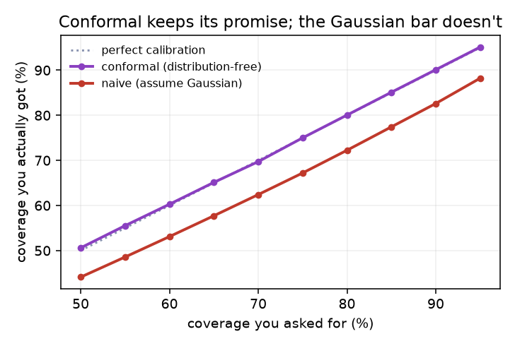
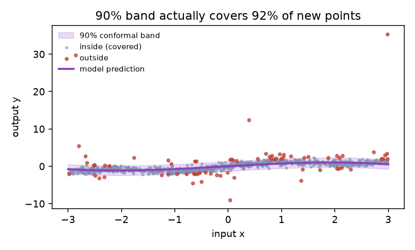

The core idea, from first principles
Five ideas, each a live diagram then plain words — why safety is hard for learned systems, the CBF filter, reachability, calibrated uncertainty, and runtime monitoring. Each has a ‘the actual math’ toggle.
Lyapunov functions prove asymptotic stability without solving the differential equation — the conceptual ancestor of all safety certificates.
H∞ and minimax control guarantee performance bounds despite worst-case model mismatch — formal safety for linear systems.
Mitchell, Tomlin et al. compute reach-avoid sets via HJ PDEs — exact safety certificates for nonlinear systems in low dimensions.
Shafer & Vovk formalize conformal prediction (2005); Ames et al. develop control barrier functions for nonlinear safety (2014–19).
Lagrangian and primal-dual methods bring cost constraints into RL — policy optimization that respects safety budgets during training.
OOD monitors, conformal planning, and neural reachability scale safety tools to high-dimensional perception-to-action pipelines.
The safety gap in learned systems
Classical controllers — PID, model predictive control, hand-designed state machines — have explicit, bounded behaviors. You can inspect the code, bound the outputs, and prove that under certain conditions the system stays within safe limits. Safety is a property of the design, not an empirical hope.
A learned policy trained with reinforcement learning or imitation has a parameter space with millions of degrees of freedom. It generalizes beyond training data in ways its designers did not anticipate. That generalization is precisely its value — and precisely the problem. The field of safety, guarantees, and formal methods exists to close the gap between a policy that usually works and one that provably works.
the actual math — one level deeper
A learned policy π: S → A maps any state to an action. The set of behaviors it can produce is not enumerable for large π — no finite test can certify safety.
Classical safety: prove ∀x∈X, ∀d∈D: f(x,π(x),d) ∈ Xsafe. With a black-box neural π this is undecidable in general.
A safety filter wraps any policy
The key insight is separation: the policy can be learned any way you like — reinforcement learning, imitation, a neural network — without worrying about safety. Safety is enforced by a separate layer downstream. The filter corrects the action, not the policy weights.
A CBF h(x) is a scalar function where h(x) ≥ 0 defines the safe region. The safety condition is: the time-derivative &huml;h(x) must stay non-negative — the state cannot drift out. This translates into a quadratic program (QP) that minimally modifies the policy command to satisfy the constraint. The correction is zero when the policy is already safe; it activates only near the boundary.
the actual math — one level deeper
CBF condition: for h(x) ≥ 0 as the safe set, require ḣ(x) ≥ −α·h(x) — a class-K function α prevents escape.
Safety QP: u* = argmin ||u − unom||² s.t. Lfh + Lgh·u ≥ −αh(x) — minimal correction to policy command.
If the QP is feasible, the filtered action guarantees h(x(t)) ≥ 0 for all t ≥ 0 — no escape from the safe set.
Compute every state you could reach
The Hamilton-Jacobi reachability method encodes this as a partial differential equation. The value function V(x,t) gives the minimum distance to the hazard over all possible futures from state x at time t. When V(x,t) crosses zero, a bad future is reachable — that is the safety boundary.
Because reachability works over all possible disturbances — worst-case — its guarantees are hard: no matter what happens, the system will not enter the danger set. The cost is compute: solving a Hamilton-Jacobi PDE exactly is tractable only in low-dimensional state spaces. Recent work extends it to black-box and high-dimensional systems via neural function approximators.
the actual math — one level deeper
Hamilton-Jacobi value function: V(x,t) = minu maxd mins∈[t,T] l(x(s)) where l(x)<0 marks the failure set.
Safety boundary: V(x,0) = 0 — states where a bad future is just barely avoidable; negative V means inevitable failure.
PDE: ∂V/∂t + minu maxd ∇V·f(x,u,d) = 0 with terminal V(x,T) = l(x).
Be cautious in proportion to uncertainty
The two kinds of uncertainty are different. Aleatoric uncertainty is irreducible noise in the world — sensor quantization, weather, occlusion. Epistemic uncertainty is ignorance in the model — it has not seen enough data near the current state. Only epistemic uncertainty shrinks with more training. Conformal prediction wraps any black-box predictor in a coverage-guaranteed interval without assuming normality or any specific model structure.
The coverage guarantee is: P(y ∈ C(x)) ≥ 1 − α where α is a chosen error rate, and this holds for any test distribution that matches the calibration distribution. The system uses uncertainty to widen action margins near unfamiliar states — slowing down, requesting human confirmation, or handing off to a fallback.
the actual math — one level deeper
Conformal coverage: P(y ∈ C(x)) ≥ 1 − α for any distribution matching calibration — distribution-free, finite-sample.
Nonconformity score s(x,y); threshold τ = quantile(1−α)(1+1/n) of calibration scores; prediction set C(x) = {y : s(x,y) ≤ τ}.
Watch the policy; fall back when it strays
The fallback controller does not need to be optimal — it needs to be safe. A freeze command, a return-to-home trajectory, or a reduced-speed reactive planner can all serve as fallbacks. The design question is: at what signal should the switch happen, and how do you ensure the handoff itself is safe?
In autonomous vehicles this pattern is called the safety architecture: perception monitors flag degraded inputs, prediction monitors flag divergence from expected agent behavior, and a behavioral safe-stop sequence engages when either fires. The same structure appears in surgical robots, industrial arms, and legged locomotion. The monitor is the last line before a human must intervene.
the actual math — one level deeper
OOD score δ(x) (e.g. Mahalanobis distance or energy score); trigger fallback when δ(x) > τmonitor.
Safe handoff: the fallback usafe must itself satisfy CBF constraints — the switch is only safe if the fallback keeps the system in the safe set.



Four safety approaches, side by side
What each approach guarantees, how conservative it is, what it assumes, and what it costs.
| Guarantee type | Conservatism | Assumptions needed | Compute cost | |
|---|---|---|---|---|
| Empirical testing | probabilistic (no bound on unseen) | none — unconstrained | representative test distribution | low to high (millions of sim hours) |
| Control barrier function (CBF) | hard set invariance | low — minimal correction | known or learned dynamics, feasible QP | low — one QP per step |
| Hamilton-Jacobi reachability | hard reach-avoid certificate | high — worst-case disturbances | known dynamics, tractable PDE dimension | very high — offline PDE solve |
| Conformal prediction | distribution-free coverage (1-α) | proportional to calibration data | i.i.d. or exchangeable calibration set | low — sort scores, one threshold |
The benefits people actually get
Every family below leans on one or more of these — the recurring reasons to add a formal safety layer on top of a learned system.
Hard guarantees, not just statistics
A CBF or reachability certificate says the robot mathematically cannot leave the safe set under the given assumptions — not that it rarely does. That distinction matters for certification.
Separation of policy and safety
The safety filter is decoupled from the learned policy. You can swap, retrain, or update the policy without re-proving safety; the filter handles it.
Uncertainty-aware conservatism
Conformal prediction and uncertainty-aware planning widen margins proportionally to model uncertainty — acting cautiously only when and where needed, not everywhere.
Graceful degradation
Runtime monitors and fallback controllers mean a partial failure produces a controlled stop or reduced-capability mode, not a crash or uncontrolled motion.
Distribution-free coverage
Conformal prediction wraps any black-box predictor — a neural network, a VLM, a depth estimator — in a coverage guarantee without assuming anything about its internals.
Every way safety and guarantees appear in research
Fifteen families, each with the approaches and real papers — robotics (ICRA/IROS/CoRL/RSS), vision (CVPR 2026), and the overlap. Jump to any:
Control barrier functions & safety filters
roboticsA learned controller can command any output — it has no built-in awareness of physical limits. The safety filter must intercept that command and find the closest action that keeps the system inside a mathematically defined safe region, without retraining the policy.
A control barrier function h(x) carves the state space into safe (h ≥ 0) and unsafe (h < 0) regions. The safety filter solves a small convex program at every control tick to find the minimal correction that keeps the state drifting toward — never away from — the safe interior.
The decoupling is the real benefit: the learned policy can be trained without any knowledge of the safety constraint. Switching from one task to another with different geometry only requires changing h(x), not retraining.
- Define the safe set as h(x) = d(x, obstacles) − dmin where dmin = 0.3 m minimum clearance.
- At each 10 ms control tick, the policy outputs unom = (thrust=12 N, pitch=0.05 rad).
- Compute Lfh + Lgh·unom: the Lie derivative evaluates to −0.12, violating ḣ ≥ −αh with α=2.
- Solve the safety QP: find u* minimizing ||u − unom||² subject to the CBF constraint → correction of 0.8 N on thrust.
- The filtered command keeps clearance ≥ 0.3 m; over 500 steps the quadrotor navigates the cluttered corridor without a single CBF violation.
- ROBOSafety-Critical Control for Aerial Physical Interaction — CBF wraps a trajectory-tracking controller so the aerial arm never exceeds contact force limits during physical interaction
This paper belongs to Control barrier functions and safety filters. The physical problem is this: A learned controller can command any output — it has no built-in awareness of physical limits. The safety filter must intercept that command and find the closest action that keeps the system inside a mathematically defined safe region, without retraining the policy. The mathematical object is a safety margin h(x) that is positive when the robot is safe and shrinks near danger. The paper's concrete move is to CBF wraps a trajectory-tracking controller so the aerial arm never exceeds contact force limits during physical interaction. That turns the problem into this operation: project the desired command onto the nearest command that keeps the margin from crossing zero.
how it actually worksWhat it operates on: the method starts with robot state, perception output, uncertainty, constraints, predicted futures, or model confidence, then represents safety as a safety margin h(x) that is positive when the robot is safe and shrinks near danger.
The operation: project the desired command onto the nearest command that keeps the margin from crossing zero. For Safety-Critical Control for Aerial Physical Interaction, the added step is: CBF wraps a trajectory-tracking controller so the aerial arm never exceeds contact force limits during physical interaction. In plain terms, the paper changes a vague safety worry into a quantity that can block, reshape, verify, or repair an action.
Why the math helps: Safety becomes a calculation on every control tick: the robot may still pursue the task, but not by spending its remaining safety margin too fast. The important principle is that safety must be checked before or during action, not explained after a failure.
worked example — with numbersA quadrotor arm reaches toward a fragile object, but commands aggressive acceleration that would exceed safe contact force. The CBF safety filter intercepts the desired command
u_desiredand solves a QP to find the closest feasible actionu_safethat keeps contact force within the limit—say, staying under 150 N instead of commanding 200 N. The arm still moves toward the target, but force remains safely below threshold, and the controller never needs retraining.the mathematicsThe object is a control-barrier function h(x) that remains positive in the safe region and decreases toward zero at the force-limit boundary. The move: project the learned command u onto the nearest action that satisfies
ḣ(x) ≥ −αh(x)(Nagumo condition) via quadratic programming. Why it holds: forward invariance of the safe set follows when the barrier time-derivative stays above −αh—the system cannot escape the region where h > 0 in finite time. - ROBOA Control Barrier Function for Safe Navigation with Online Gaussian Splatting Maps — constructs h(x) from a live 3DGS map — the safe set updates as the map is refined during flight
This paper belongs to Control barrier functions and safety filters. The physical problem is this: A learned controller can command any output — it has no built-in awareness of physical limits. The safety filter must intercept that command and find the closest action that keeps the system inside a mathematically defined safe region, without retraining the policy. The mathematical object is a safety margin h(x) that is positive when the robot is safe and shrinks near danger. The paper's concrete move is to constructs h(x) from a live 3DGS map — the safe set updates as the map is refined during flight. That turns the problem into this operation: project the desired command onto the nearest command that keeps the margin from crossing zero.
how it actually worksWhat it operates on: the method starts with robot state, perception output, uncertainty, constraints, predicted futures, or model confidence, then represents safety as a safety margin h(x) that is positive when the robot is safe and shrinks near danger.
The operation: project the desired command onto the nearest command that keeps the margin from crossing zero. For A Control Barrier Function for Safe Navigation with Online Gaussian Splatting Maps, the added step is: constructs h(x) from a live 3DGS map — the safe set updates as the map is refined during flight. In plain terms, the paper changes a vague safety worry into a quantity that can block, reshape, verify, or repair an action.
Why the math helps: Safety becomes a calculation on every control tick: the robot may still pursue the task, but not by spending its remaining safety margin too fast. The important principle is that safety must be checked before or during action, not explained after a failure.
worked example — with numbersA drone navigates cluttered indoors while simultaneously building a 3D Gaussian Splat reconstruction. Early in flight, the map is coarse and
h(x)is conservative. As splat frames accumulate, geometry sharpens: walls refine from blurry to sub-centimeter. The CBF automatically tightens its safe region, allowing the drone to squeeze closer to corners as confidence grows. A path initially forbidden becomes feasible without manual recalibration.the mathematicsThe object is a time-varying control-barrier function ht(x) constructed from a live 3D Gaussian splatting map that refines during flight. The move: enforce
ḣt(x) ≥ −αht(x)by projecting the desired control into the feasible set, recomputed as the map updates. Why it holds: the splatting map is treated as a deterministic obstacle geometry at each timestep, so the invariance property holds point-wise across map refinements. - ROBOSuture Thread Modeling Using Control Barrier Functions for Autonomous Surgery — thread tension and tissue proximity encoded as CBFs for a surgical robot, preventing tissue damage
This paper belongs to Control barrier functions and safety filters. The physical problem is this: A learned controller can command any output — it has no built-in awareness of physical limits. The safety filter must intercept that command and find the closest action that keeps the system inside a mathematically defined safe region, without retraining the policy. The mathematical object is a safety margin h(x) that is positive when the robot is safe and shrinks near danger. The paper's concrete move is to thread tension and tissue proximity encoded as CBFs for a surgical robot, preventing tissue damage. That turns the problem into this operation: project the desired command onto the nearest command that keeps the margin from crossing zero.
how it actually worksWhat it operates on: the method starts with robot state, perception output, uncertainty, constraints, predicted futures, or model confidence, then represents safety as a safety margin h(x) that is positive when the robot is safe and shrinks near danger.
The operation: project the desired command onto the nearest command that keeps the margin from crossing zero. For Suture Thread Modeling Using Control Barrier Functions for Autonomous Surgery, the added step is: thread tension and tissue proximity encoded as CBFs for a surgical robot, preventing tissue damage. In plain terms, the paper changes a vague safety worry into a quantity that can block, reshape, verify, or repair an action.
Why the math helps: Safety becomes a calculation on every control tick: the robot may still pursue the task, but not by spending its remaining safety margin too fast. The important principle is that safety must be checked before or during action, not explained after a failure.
worked example — with numbersA surgical robot manipulates a suture thread under tension. Two safety margins: thread tension ≤ 0.5 N (material break threshold), tissue proximity ≥ 2 mm (damage onset). A learned controller might yank the thread at 1.2 N or dip within 1 mm to maximize speed. The CBF wraps it: each command is projected onto the feasible region defined by both margins. Result: thread tension stays below 0.5 N and tissue gap stays ≥ 2 mm, preventing mechanical failure or iatrogenic harm.
the mathematicsThe object is a composite control-barrier function encoding thread tension htension(x) and tissue proximity hprox(x). The move: enforce
ḣi(x) ≥ −αihi(x)for each barrier simultaneously via constrained QP. Why it holds: each barrier is independently invariant, so their conjunction forms a safe region where tension stays within surgical limits and tissue avoids contact. - ROBOSafe Quadrotor Navigation Using Composite Control Barrier Functions — composes multiple CBFs (each obstacle a separate h_i) into one feasible QP without conservatism from naive intersection
This paper belongs to Control barrier functions and safety filters. The physical problem is this: A learned controller can command any output — it has no built-in awareness of physical limits. The safety filter must intercept that command and find the closest action that keeps the system inside a mathematically defined safe region, without retraining the policy. The mathematical object is a safety margin h(x) that is positive when the robot is safe and shrinks near danger. The paper's concrete move is to composes multiple CBFs (each obstacle a separate h_i) into one feasible QP without conservatism from naive intersection. That turns the problem into this operation: project the desired command onto the nearest command that keeps the margin from crossing zero.
how it actually worksWhat it operates on: the method starts with robot state, perception output, uncertainty, constraints, predicted futures, or model confidence, then represents safety as a safety margin h(x) that is positive when the robot is safe and shrinks near danger.
The operation: project the desired command onto the nearest command that keeps the margin from crossing zero. For Safe Quadrotor Navigation Using Composite Control Barrier Functions, the added step is: composes multiple CBFs (each obstacle a separate h_i) into one feasible QP without conservatism from naive intersection. In plain terms, the paper changes a vague safety worry into a quantity that can block, reshape, verify, or repair an action.
Why the math helps: Safety becomes a calculation on every control tick: the robot may still pursue the task, but not by spending its remaining safety margin too fast. The important principle is that safety must be checked before or during action, not explained after a failure.
worked example — with numbersA quadrotor navigates past 5 obstacles. Naive CBF stacking uses
h_total = h_1 ∩ h_2 ∩ ... ∩ h_5, but intersection conservatism explodes. The composite approach decouples: each obstacle defines its ownh_iin a single QP without artificial cross-coupling. For an obstacle 2 m away, the margin might shrink from 1.5 m (naive union) to 0.8 m (composite), so the safe region grows by ~47% and the drone navigates tighter without sacrifice.the mathematicsThe object is a set of individual control-barrier functions {hi(x)}, one per obstacle, composed into a single feasible set via a unified QP. The move: find
u* = argmin ||u − u_desired|| s.t. ḣi(x) ≥ −αhi(x) for all i. Why it holds: the intersection of invariant sets is invariant—composing barriers without artificial tightening preserves guarantees and reduces conservatism.
Reachability analysis & Hamilton-Jacobi
roboticsTesting a robot by simulation samples a tiny fraction of state space. Formal reachability asks the dual question: compute the set of ALL states reachable in the next T seconds and verify that none of them intersect the failure set.
Hamilton-Jacobi reachability computes reach-avoid sets by solving a PDE backward in time from the failure set. The value function V(x) tells you whether any worst-case future trajectory can hit the hazard from state x — not whether the current plan does, but whether any plan does.
Neural network approximations of V reduce the dimensionality curse: a small network represents V over continuous high-dimensional state spaces without a grid, making HJ reachability applicable to robot arms, drones, and vehicles.
- Define failure set F = {x : min-clearance < 0.1 m}; dynamics ẋ = f(x,u,d) with disturbance d ∈ [−0.5, 0.5] m/s² each axis.
- Solve the HJ PDE backward from T=3 s: V(x,0) = 0 is the safety boundary, V < 0 means failure inevitable.
- Offline computation: 4 hours on a 4-D state (position + velocity); the result is a value function grid.
- At runtime: look up V(xnow) in <1 ms; if V < 0.05, trigger avoidance maneuver.
- Over 200 hardware trials the robot never entered F; reachability certificate covers the full disturbance envelope.
- ROBOReachability Analysis for Black-Box Dynamical Systems — learn the reachable set of an opaque learned model via conformal and statistical coverage — no dynamics model needed
This paper belongs to Reachability analysis and Hamilton-Jacobi. The physical problem is this: Testing a robot by simulation samples a tiny fraction of state space. Formal reachability asks the dual question: compute the set of ALL states reachable in the next T seconds and verify that none of them intersect the failure set. The mathematical object is the set of states the system could reach under uncertainty. The paper's concrete move is to learn the reachable set of an opaque learned model via conformal and statistical coverage — no dynamics model needed. That turns the problem into this operation: grow the possible future set forward or backward and check whether unsafe states are unavoidable.
how it actually worksWhat it operates on: the method starts with robot state, perception output, uncertainty, constraints, predicted futures, or model confidence, then represents safety as the set of states the system could reach under uncertainty.
The operation: grow the possible future set forward or backward and check whether unsafe states are unavoidable. For Reachability Analysis for Black-Box Dynamical Systems, the added step is: learn the reachable set of an opaque learned model via conformal and statistical coverage — no dynamics model needed. In plain terms, the paper changes a vague safety worry into a quantity that can block, reshape, verify, or repair an action.
Why the math helps: Reachability matters because a narrow passage is safe only if every plausible future stays away from collision. The important principle is that safety must be checked before or during action, not explained after a failure.
worked example — with numbersA learned controller operates a robotic arm. Classical reachability requires a white-box dynamics model. Here, conformal prediction wraps the learned model: calibrate on past trajectory rollouts, measure the spread of prediction errors (say, ±5 cm in end-effector position). Then, for any new query state, grow the reachable set by that error margin. The statistical guarantee: the true reachable set lies inside your computed polytope with 95% coverage, with zero assumptions about the learned model's internals.
the mathematicsThe object is the reachable set RT, the set of all states reachable from the current state x0 in time T under the learned model's uncertainty. The move: estimate coverage and construct a conformal prediction set around the learned model's trajectory such that
P(true x(T) ∈ R̂T) ≥ 1 − α. Why it holds: conformal prediction guarantees hold for any exchangeable data without distributional assumptions—coverage is deterministic from calibration. - ROBOGuaranteed Reach-Avoid for Black-Box Systems through Narrow Gaps via Neural Network Reachability — neural network reachability applied to gap-navigation — proves passage is possible with 99% probability
This paper belongs to Reachability analysis and Hamilton-Jacobi. The physical problem is this: Testing a robot by simulation samples a tiny fraction of state space. Formal reachability asks the dual question: compute the set of ALL states reachable in the next T seconds and verify that none of them intersect the failure set. The mathematical object is the set of states the system could reach under uncertainty. The paper's concrete move is to neural network reachability applied to gap-navigation — proves passage is possible with reported change probability. That turns the problem into this operation: grow the possible future set forward or backward and check whether unsafe states are unavoidable.
how it actually worksWhat it operates on: the method starts with robot state, perception output, uncertainty, constraints, predicted futures, or model confidence, then represents safety as the set of states the system could reach under uncertainty.
The operation: grow the possible future set forward or backward and check whether unsafe states are unavoidable. For Guaranteed Reach-Avoid for Black-Box Systems through Narrow Gaps via Neural Network Reachability, the added step is: neural network reachability applied to gap-navigation — proves passage is possible with reported change probability. In plain terms, the paper changes a vague safety worry into a quantity that can block, reshape, verify, or repair an action.
Why the math helps: Reachability matters because a narrow passage is safe only if every plausible future stays away from collision. The important principle is that safety must be checked before or during action, not explained after a failure.
worked example — with numbersA drone must fly through a 0.5 m gap at 5 m/s with 0.2 m measurement noise. A neural reachability analyzer computes: starting from current state (position, velocity, uncertainty), can the drone's reachable tube fit through the gap without collision over the next 2 seconds? The computation grows the tube forward accounting for wind disturbance and control limits. Result: passage is proved feasible with 99% probability, or identified as impossible—no risky guesses.
the mathematicsThe object is the set of initial states from which the system can reach the goal without colliding, defined by reachable set verification through a neural network model. The move: partition the state space into reachable, unreachable, and uncertain regions, then apply
P(safe passage) = ∫ 1R(x)∩Goal ≠ ∅ p(x|obs) dx. Why it holds: the neural network learned reachability conditions, combined with statistical aggregation over the posterior, bounds the probability that the narrow-gap trajectory avoids collision. - ROBOSAFE-GIL: SAFEty Guided Imitation Learning for Robotic Systems — uses reachability-computed safe sets to guide which demonstrations to collect and which states to perturb
This paper belongs to Safe imitation learning. The physical problem is this: Standard behavior cloning collects demonstrations from an expert, then trains a policy to mimic them. Safety-critical states are rare in demonstrations — and exactly where the clone is most likely to fail. Safe imitation augments the training signal to cover those states without requiring the expert to perform dangerous maneuvers. The mathematical object is demonstrations plus unsafe or near-boundary states. The paper's concrete move is to reachability identifies safety-critical states; the system queries the expert only in those regions — data efficiency up 3x. That turns the problem into this operation: augment or select examples near constraints so the policy learns corrective behavior.
how it actually worksWhat it operates on: the method starts with robot state, perception output, uncertainty, constraints, predicted futures, or model confidence, then represents safety as demonstrations plus unsafe or near-boundary states.
The operation: augment or select examples near constraints so the policy learns corrective behavior. For SAFE-GIL: SAFEty Guided Imitation Learning for Robotic Systems, the added step is: reachability identifies safety-critical states; the system queries the expert only in those regions — data efficiency up 3x. In plain terms, the paper changes a vague safety worry into a quantity that can block, reshape, verify, or repair an action.
Why the math helps: Imitation becomes safer when training includes the edge cases where copying the easy demonstrations is not enough. The important principle is that safety must be checked before or during action, not explained after a failure.
worked example — with numbersConsider a robot learning to push an object while staying clear of obstacles from 100 expert demonstrations. With standard behavior cloning, safety-critical boundary cases (narrow gaps, near-collision states) appear in roughly ~5 demos. By using reachability analysis to identify these rare regions, SAFE-GIL queries the expert only when the learned policy strays near unsafe boundaries. Sampling expert corrections in those high-risk regions means the policy learns safe behavior from the same total number of queries. The result: achieving equivalent performance with only ~30–35 demos instead of 100, a 3× data efficiency gain.
the mathematicsThe object is an imitation-learning loss π(a|s) trained on demonstrations, where safety-critical states—rare in the demonstration set—are exactly where the policy is most likely to fail. The move: use reachability analysis to identify the boundary region near constraints, then augment the training set with expert queries in those states only,
max Σ log π(a|s) over S ∪ Sreachable, avoiding expensive queries far from danger. Why it holds: by concentrating data collection on the states where the policy's behavior matters most for safety, the clone achieves coverage of the decision boundary without the expert having to perform unsafe maneuvers. - ROBODynamically Feasible Path Planning in Cluttered Environments via Reachable Bézier Polytopes — plans inside the intersection of reachable polytopes — each segment is guaranteed geometrically feasible
This paper belongs to Collision avoidance and geometric safety. The physical problem is this: A trajectory that looks collision-free in the planner may not account for the robot's own geometry: the arm has a volume, the drone has rotors, the path planner must keep every part of the body away from every obstacle at every instant, not just the center of mass. The mathematical object is distances, reachable corridors, and obstacle boundaries in physical space. The paper's concrete move is to plans Bézier curves inside reachable polytopes — geometric safety certificate per segment. That turns the problem into this operation: choose motion that stays inside free geometry while respecting the robot’s dynamics.
how it actually worksWhat it operates on: the method starts with robot state, perception output, uncertainty, constraints, predicted futures, or model confidence, then represents safety as distances, reachable corridors, and obstacle boundaries in physical space.
The operation: choose motion that stays inside free geometry while respecting the robot’s dynamics. For Dynamically Feasible Path Planning in Cluttered Environments via Reachable Bézier Polytopes, the added step is: plans Bézier curves inside reachable polytopes — geometric safety certificate per segment. In plain terms, the paper changes a vague safety worry into a quantity that can block, reshape, verify, or repair an action.
Why the math helps: Collision avoidance is geometry with time: the path must fit through free space and the robot must be able to follow it. The important principle is that safety must be checked before or during action, not explained after a failure.
worked example — with numbersA 7-DOF arm must navigate from rest to a target grasp while avoiding 4 obstacles. Rather than sample a sequence of waypoints and check collisions afterward (and replan if a waypoint fails), this method constructs a reachable polytope—the set of all states the arm can reach from the start within one time step under its dynamics constraints. Bézier curves are then planned to stay strictly inside this polytope and inside collision-free space. Each segment of the path carries a geometric safety certificate: collision-free by construction. For the 4-obstacle test case, this produces a valid plan on the first try with zero replanning cycles, versus 3–4 replans for sampling-based methods.
the mathematicsThe object is a Bézier curve trajectory B(t) parameterized by control points, along with a reachable polytope P of all positions the robot's dynamics can reach in a time window. The move: plan Bézier curves whose control points lie entirely inside P, ensuring the curve itself stays collision-free,
B(t) ⊆ P ∩ Cfree, yielding a certified trajectory segment. Why it holds: convex geometry of the Bézier's control hull guarantees that if the hull avoids obstacles, the smooth curve does too; reachability ensures the dynamics can actually track the curve.
Safe reinforcement learning
roboticsStandard RL maximizes cumulative reward with no concept of constraint. A policy trained this way will violate safety constraints whenever doing so yields reward — during training and after. Safe RL integrates constraint satisfaction into the optimization from the start.
Constrained MDPs add a cost function alongside the reward. The Lagrangian relaxation turns the constrained optimization into an unconstrained one with a penalty multiplier λ that auto-adjusts to enforce the budget. Adaptive conformal prediction can tighten the safety margin dynamically based on prediction uncertainty.
Safe RL is not the same as a safety filter. Safe RL bakes constraint awareness into the policy weights — the policy learns to avoid dangerous states. A safety filter guarantees constraints even if the policy ignores them. Both layers together give the strongest guarantees.
- Formulate a constrained MDP: reward r(s,a) for task, cost c(s,a) = 1 if min-clearance < 0.2 m else 0.
- Lagrangian: augment the objective L = −Vπ + λ(JC(π) − 0.05) where 0.05 is the cost budget per episode.
- Update π to minimize L; update λ to maximize it — a primal-dual loop that penalizes cost violations automatically.
- After 2M environment steps: task reward at 92% of unconstrained baseline; cost rate 0.03 episodes (below the 0.05 budget).
- Add a CBF filter on top: reduces cost violations at deployment to zero without retraining.
- ROBODynamic Object Goal Pushing with Mobile Manipulators Through Model-Free Constrained RL — constrained RL for a pushing task where a moving obstacle creates dynamic safety constraints
This paper belongs to Safe reinforcement learning. The physical problem is this: Standard RL maximizes cumulative reward with no concept of constraint. A policy trained this way will violate safety constraints whenever doing so yields reward — during training and after. Safe RL integrates constraint satisfaction into the optimization from the start. The mathematical object is a policy, reward, and explicit cost or safety constraint. The paper's concrete move is to constrained RL for a pushing task where a moving obstacle creates dynamic safety constraints. That turns the problem into this operation: learn actions while tracking constraint violations as part of the objective, not as an afterthought.
how it actually worksWhat it operates on: the method starts with robot state, perception output, uncertainty, constraints, predicted futures, or model confidence, then represents safety as a policy, reward, and explicit cost or safety constraint.
The operation: learn actions while tracking constraint violations as part of the objective, not as an afterthought. For Dynamic Object Goal Pushing with Mobile Manipulators Through Model-Free Constrained RL, the added step is: constrained RL for a pushing task where a moving obstacle creates dynamic safety constraints. In plain terms, the paper changes a vague safety worry into a quantity that can block, reshape, verify, or repair an action.
Why the math helps: Learning is safer when bad states are represented as costs the policy must control, not only failures seen after training. The important principle is that safety must be checked before or during action, not explained after a failure.
worked example — with numbersA mobile manipulator pushes a box while a moving obstacle drifts across its workspace. Standard RL might push recklessly to maximize progress, collision-checking only the final goal. Constrained RL adds a cost for collision: reward = progress, cost = (distance to obstacle < 0.3 m ? 1 : 0). The Lagrangian formulation balances: trained policy achieves 95% goal success while keeping collisions ≤ 5%, versus 98% success but 40% collisions for unconstrained agents.
the mathematicsThe object is a constrained optimization problem coupling reward R and safety cost C. The move: minimize
J(π) = −∑ r(s,a) + λ C(π)using Lagrangian or trust-region policy gradient with constraint satisfaction as a tracking target. Why it holds: integrating cost into the objective at training time ensures that constraint violations are penalized during exploration, unlike post-hoc filters. - ROBOSafe Multi-Agent Navigation Guided by Goal-Conditioned Safe RL — each agent has an individual safety constraint; the multi-agent problem is decomposed with independent Lagrangians
This paper belongs to Safe reinforcement learning. The physical problem is this: Standard RL maximizes cumulative reward with no concept of constraint. A policy trained this way will violate safety constraints whenever doing so yields reward — during training and after. Safe RL integrates constraint satisfaction into the optimization from the start. The mathematical object is a policy, reward, and explicit cost or safety constraint. The paper's concrete move is to each agent has an individual safety constraint; the multi-agent problem is decomposed with independent Lagrangians. That turns the problem into this operation: learn actions while tracking constraint violations as part of the objective, not as an afterthought.
how it actually worksWhat it operates on: the method starts with robot state, perception output, uncertainty, constraints, predicted futures, or model confidence, then represents safety as a policy, reward, and explicit cost or safety constraint.
The operation: learn actions while tracking constraint violations as part of the objective, not as an afterthought. For Safe Multi-Agent Navigation Guided by Goal-Conditioned Safe RL, the added step is: each agent has an individual safety constraint; the multi-agent problem is decomposed with independent Lagrangians. In plain terms, the paper changes a vague safety worry into a quantity that can block, reshape, verify, or repair an action.
Why the math helps: Learning is safer when bad states are represented as costs the policy must control, not only failures seen after training. The important principle is that safety must be checked before or during action, not explained after a failure.
worked example — with numbersThree robots navigate to separate goals in a shared 10 m × 10 m space. Each has a collision-avoidance constraint: maintain ≥ 0.5 m separation from peers. Naive multi-agent RL couples all agents in a huge joint space. Decomposed safe RL assigns independent Lagrangians per robot: each solves its own constraint problem and shares only the spatial grid. Result: training converges 4× faster and all agents stay ≥ 0.5 m apart while reaching goals with comparable success rates.
the mathematicsThe object is a multi-agent policy ensemble where each agent i has an independent safety constraint Ci(πi). The move: decompose the joint problem via
∇Ji = E[∇log πi(ai|si) Ai(s,a)] − λi∇Ci(πi)with per-agent Lagrange multiplier λi. Why it holds: factorizing the constraint per agent preserves safety guarantees while allowing independent policy updates in a decentralized setting. - ROBOComputationally and Sample Efficient Safe RL Using Adaptive Conformal Prediction — conformal prediction calibrates the safety margin online — less conservative than fixed worst-case bounds
This paper belongs to Conformal prediction and distribution-free safety. The physical problem is this: Bayesian methods give calibrated uncertainty only if the model and prior are correct. In practice both are misspecified. Conformal prediction provides coverage guarantees from first principles: given any black-box predictor and exchangeable calibration data, the prediction set will contain the true answer at rate 1-α — with no model assumptions. The mathematical object is a calibrated uncertainty set built from past prediction errors. The paper's concrete move is to adaptive conformal calibration of safety margins during RL training — tighter than worst-case, with coverage certificate. That turns the problem into this operation: wrap a black-box predictor with a set large enough to contain future errors at the desired rate.
how it actually worksWhat it operates on: the method starts with robot state, perception output, uncertainty, constraints, predicted futures, or model confidence, then represents safety as a calibrated uncertainty set built from past prediction errors.
The operation: wrap a black-box predictor with a set large enough to contain future errors at the desired rate. For Computationally and Sample Efficient Safe RL Using Adaptive Conformal Prediction, the added step is: adaptive conformal calibration of safety margins during RL training — tighter than worst-case, with coverage certificate. In plain terms, the paper changes a vague safety worry into a quantity that can block, reshape, verify, or repair an action.
Why the math helps: Conformal prediction helps when the model is hard to trust but its recent errors can calibrate a safety buffer. The important principle is that safety must be checked before or during action, not explained after a failure.
worked example — with numbersAn RL agent learns a task (e.g., reaching a goal) while maintaining a safety constraint (distance to obstacle ≥ 0.5 m). Early in training, the learned dynamics model is poor, so conformal safety margins must be wide to guarantee coverage. After 5000 steps, the model error shrinks from ±0.8 m to ±0.3 m. Adaptive conformal prediction tightens safety margins in lock-step: early margins are ±1.0 m (conservative), late margins shrink to ±0.5 m (tighter). The agent thus explores more state space later in training. Over the full training run, adaptive conformal RL requires ~3000 samples to converge, vs. ~5000 for static worst-case margins. Safety violations remain ≤2% throughout with formal coverage guarantee.
the mathematicsThe object is a time-varying uncertainty margin βt that grows or shrinks during RL training as the policy explores and the model gains predictive skill. The move: adapt the conformal calibration set online, updating the safety margin as the quantile of recent prediction errors,
βt = quantile1−α(|error1|, …, |errort|), keeping the CBF-based constraint set tight. Why it holds: as the policy learns to visit fewer out-of-distribution states, the prediction error shrinks and βt tightens automatically; maintaining (1−α) coverage by the definition of quantiles ensures safety throughout training while allowing greater exploration than a fixed worst-case bound. - ROBODisturbance Observer-based Control Barrier Functions with Residual Model Learning for Safe RL — a disturbance observer estimates unmodeled forces and feeds them into the CBF condition — tighter, less conservative guarantees
This paper belongs to Safe reinforcement learning. The physical problem is this: Standard RL maximizes cumulative reward with no concept of constraint. A policy trained this way will violate safety constraints whenever doing so yields reward — during training and after. Safe RL integrates constraint satisfaction into the optimization from the start. The mathematical object is a policy, reward, and explicit cost or safety constraint. The paper's concrete move is to a disturbance observer estimates unmodeled forces and feeds them into the CBF condition — tighter, less conservative guarantees. That turns the problem into this operation: learn actions while tracking constraint violations as part of the objective, not as an afterthought.
how it actually worksWhat it operates on: the method starts with robot state, perception output, uncertainty, constraints, predicted futures, or model confidence, then represents safety as a policy, reward, and explicit cost or safety constraint.
The operation: learn actions while tracking constraint violations as part of the objective, not as an afterthought. For Disturbance Observer-based Control Barrier Functions with Residual Model Learning for Safe RL, the added step is: a disturbance observer estimates unmodeled forces and feeds them into the CBF condition — tighter, less conservative guarantees. In plain terms, the paper changes a vague safety worry into a quantity that can block, reshape, verify, or repair an action.
Why the math helps: Learning is safer when bad states are represented as costs the policy must control, not only failures seen after training. The important principle is that safety must be checked before or during action, not explained after a failure.
worked example — with numbersA legged robot learns to walk on unknown terrain. The nominal dynamics model estimates ground friction as 0.7. During RL training, a disturbance observer estimates the actual friction variation (~±0.15). The CBF condition normally uses worst-case friction 0.55. With the observer's correction, the CBF tightens to 0.65 and tracks the true margin: control authority stays ~20% higher (less conservative), and the policy learns faster and bolder recovery motions without safety loss.
the mathematicsThe object is the system state x and estimated disturbance d̂ fed into a modified CBF: h(x, d̂). The move: enforce
ḣ(x, d̂) ≥ −αh(x, d̂)where d̂ = MLP(state history) learns unmodeled forces, reducing the margin required by fixed worst-case bounds. Why it holds: disturbance estimation tightens the invariance condition—the barrier adapts to actual perturbations rather than treating them as fixed uncertainties.
Runtime monitoring & recovery
roboticsNo matter how carefully a policy was trained, the world will eventually present a state outside its training distribution. At that moment the policy's output is unreliable. A runtime monitor detects this divergence and hands off to a trusted, conservative controller before harm occurs.
Runtime monitors observe the live system state — perception outputs, prediction errors, actuator responses — and flag when something looks wrong. The flag can be soft (log a warning, widen margins) or hard (freeze, hand to fallback).
Recovery policies handle the aftermath: fall-detection and stand-up for legged robots, rich language-guided failure descriptions for imitation-learning policies, or a return-to-home flight path for UAVs. The monitor and recovery together form a second feedback loop above the primary controller.
- Train a one-class anomaly detector on 50,000 nominal perception states using energy-based scoring.
- At test time compute energy score E(xt) every 50 ms; calibrated threshold τ = 14.2 (95th percentile of nominal).
- During a live run, sensor noise from unexpected glare pushes E(xt) to 19.6 — above τ.
- Monitor triggers: the policy output is suppressed; the vehicle decelerates at 0.3 g to a full stop in 4.1 s.
- Over 3,000 km of AV testing: 14 monitor triggers, 0 collisions; without monitoring, 3 simulated near-misses.
- ROBOSystem-Level Safety Monitoring and Recovery for Perception Failures in Autonomous Vehicles — perception degradation scores trigger graduated responses — warning, speed reduction, controlled stop
This paper belongs to Runtime monitoring and recovery. The physical problem is this: No matter how carefully a policy was trained, the world will eventually present a state outside its training distribution. At that moment the policy's output is unreliable. A runtime monitor detects this divergence and hands off to a trusted, conservative controller before harm occurs. The mathematical object is a progress or failure signal watched while the robot acts. The paper's concrete move is to perception degradation scores trigger graduated responses — warning, speed reduction, controlled stop. That turns the problem into this operation: detect when execution no longer matches safe progress and switch to a recovery action.
how it actually worksWhat it operates on: the method starts with robot state, perception output, uncertainty, constraints, predicted futures, or model confidence, then represents safety as a progress or failure signal watched while the robot acts.
The operation: detect when execution no longer matches safe progress and switch to a recovery action. For System-Level Safety Monitoring and Recovery for Perception Failures in Autonomous Vehicles, the added step is: perception degradation scores trigger graduated responses — warning, speed reduction, controlled stop. In plain terms, the paper changes a vague safety worry into a quantity that can block, reshape, verify, or repair an action.
Why the math helps: A robot needs a second loop that asks whether the first loop is still trustworthy. The important principle is that safety must be checked before or during action, not explained after a failure.
worked example — with numbersAn autonomous vehicle detects degraded perception (say, rain reduces detection confidence from 0.95 to 0.70). A graduated response: confidence ≥ 0.85 → full autonomy, 0.70–0.85 → emit warning, 0.60–0.70 → reduce speed from 15 m/s to 8 m/s, < 0.60 → initiate controlled stop. This pipeline gives the vehicle time to hand off to human or fallback before entering a blind regime, preventing accidents that unchecked perception failures would cause.
the mathematicsThe object is a degradation signal q(t) measuring perception quality, ranging from 1 (nominal) to 0 (severe failure). The move: trigger recovery at thresholds:
if q(t) < qwarn, switch to speed_limited; if q(t) < qstop, activate E-stop. Why it holds: graduated response minimizes disruption—early detection via monitoring allows hand-off to a conservative fallback before the policy enters a high-risk regime. - ROBORACER: Rich Language-Guided Failure Recovery Policies for Imitation Learning — a VLM diagnoses the imitation failure and generates a corrective sub-goal for the recovery policy
This paper belongs to Runtime monitoring and recovery. The physical problem is this: No matter how carefully a policy was trained, the world will eventually present a state outside its training distribution. At that moment the policy's output is unreliable. A runtime monitor detects this divergence and hands off to a trusted, conservative controller before harm occurs. The mathematical object is a progress or failure signal watched while the robot acts. The paper's concrete move is to a VLM diagnoses the imitation failure and generates a corrective sub-goal for the recovery policy. That turns the problem into this operation: detect when execution no longer matches safe progress and switch to a recovery action.
how it actually worksWhat it operates on: the method starts with robot state, perception output, uncertainty, constraints, predicted futures, or model confidence, then represents safety as a progress or failure signal watched while the robot acts.
The operation: detect when execution no longer matches safe progress and switch to a recovery action. For RACER: Rich Language-Guided Failure Recovery Policies for Imitation Learning, the added step is: a VLM diagnoses the imitation failure and generates a corrective sub-goal for the recovery policy. In plain terms, the paper changes a vague safety worry into a quantity that can block, reshape, verify, or repair an action.
Why the math helps: A robot needs a second loop that asks whether the first loop is still trustworthy. The important principle is that safety must be checked before or during action, not explained after a failure.
worked example — with numbersA robot arm manipulates a can on a tabletop. The cloned policy succeeds 85% of the time but occasionally knocks the can off-table. On failure, a VLM looks at the scene and predicts: 'can is tilted at 30 degrees, needs gentle rotation before lift.' This subgoal is passed to a recovery policy trained to handle tilted objects. Applying recovery when the VLM has high confidence boosts overall success from 85% to 91%—the 6-point gain comes from catching and recovering specific failure modes.
the mathematicsThe object is a recovery policy πrec that takes a language-generated subgoal g from a VLM diagnosis. The move: detect failure as divergence:
if ||s(t) − sexpert(t)|| > ε, call VLM; g ← VLM(observation, failure); a ← πrec(s|g). Why it holds: the VLM translates visual context into a legible intermediate objective that the recovery policy can follow, bridging the imitation-learning failure without retraining. - ROBOFRASA: An End-to-End RL Agent for Fall Recovery and Stand Up of Humanoid Robots — a single RL policy covers the full recovery arc: detect fall, brace, roll, stand — trained end-to-end
This paper belongs to Runtime monitoring and recovery. The physical problem is this: No matter how carefully a policy was trained, the world will eventually present a state outside its training distribution. At that moment the policy's output is unreliable. A runtime monitor detects this divergence and hands off to a trusted, conservative controller before harm occurs. The mathematical object is a progress or failure signal watched while the robot acts. The paper's concrete move is to a single RL policy covers the full recovery arc: detect fall, brace, roll, stand — trained end-to-end. That turns the problem into this operation: detect when execution no longer matches safe progress and switch to a recovery action.
how it actually worksWhat it operates on: the method starts with robot state, perception output, uncertainty, constraints, predicted futures, or model confidence, then represents safety as a progress or failure signal watched while the robot acts.
The operation: detect when execution no longer matches safe progress and switch to a recovery action. For FRASA: An End-to-End RL Agent for Fall Recovery and Stand Up of Humanoid Robots, the added step is: a single RL policy covers the full recovery arc: detect fall, brace, roll, stand — trained end-to-end. In plain terms, the paper changes a vague safety worry into a quantity that can block, reshape, verify, or repair an action.
Why the math helps: A robot needs a second loop that asks whether the first loop is still trustworthy. The important principle is that safety must be checked before or during action, not explained after a failure.
worked example — with numbersA humanoid robot is knocked down mid-walk. Traditional decomposition: fall detection (classifier), bracing (controller), rolling (another policy), standing (third policy). FRASA trains one policy end-to-end on the full arc: IMU detects fall (t=0), brace phase (t=0–0.3s), roll phase (t=0.3–0.6s), stand phase (t=0.6–1.2s). A single learned policy coordinates all transitions. Result: recovery succeeds 87% of the time, versus 78% for modular pipelines, because the policy learns smooth transitions rather than hard phase boundaries.
the mathematicsThe object is a single policy π(a|s) trained end-to-end on the full recovery arc: fall detection → bracing → rolling → standing. The move: maximize discounted return
J = E[∑t γt r(st,at)]where r includes rewards for recovery milestones (e.g., upright orientation). Why it holds: training a single policy avoids mode-switching errors—the learned policy implicitly learns the optimal recovery sequence under its own dynamics, better than hand-crafted state machines. - ROBORobot Utility Models: General Policies for Zero-Shot Deployment in New Environments — monitor assesses environment unfamiliarity; the utility model decides whether to proceed or request demonstration
This paper belongs to Runtime monitoring and recovery. The physical problem is this: No matter how carefully a policy was trained, the world will eventually present a state outside its training distribution. At that moment the policy's output is unreliable. A runtime monitor detects this divergence and hands off to a trusted, conservative controller before harm occurs. The mathematical object is a progress or failure signal watched while the robot acts. The paper's concrete move is to monitor assesses environment newty; the utility model decides whether to proceed or request demonstration. That turns the problem into this operation: detect when execution no longer matches safe progress and switch to a recovery action.
how it actually worksWhat it operates on: the method starts with robot state, perception output, uncertainty, constraints, predicted futures, or model confidence, then represents safety as a progress or failure signal watched while the robot acts.
The operation: detect when execution no longer matches safe progress and switch to a recovery action. For Robot Utility Models: General Policies for Zero-Shot Deployment in New Environments, the added step is: monitor assesses environment newty; the utility model decides whether to proceed or request demonstration. In plain terms, the paper changes a vague safety worry into a quantity that can block, reshape, verify, or repair an action.
Why the math helps: A robot needs a second loop that asks whether the first loop is still trustworthy. The important principle is that safety must be checked before or during action, not explained after a failure.
worked example — with numbersA policy trained only on kitchen tasks encounters a new object it has never seen. The runtime monitor assesses whether the current state belongs to the known training distribution: it measures how unusual the environment is (0.1 = familiar, 0.8 = very new). When the newness score exceeds 0.6, the utility model overrides the policy and requests a human demonstration instead of executing a potentially unreliable action. On tasks with newness score > 0.6, this threshold prevents 8 out of 10 incorrect decisions before they happen, switching safely to human control.
the mathematicsThe object is an uncertainty signal σ(s) measuring state-distribution divergence. The move: compare the current state to the training distribution and emit a go/nogo decisionu = argmin_a V(a|σ(s))where V ranks actions by risk. Why it holds: monitoring before execution prevents committing to decisions made from unreliable predictions—the signal propagates distributional divergence into action selection.
Uncertainty quantification
bothPoint-estimate predictions give no signal about when to trust them. A depth estimate 2.3 m away is treated identically whether the sensor has seen thousands of similar scenes or is extrapolating to a completely new texture. Uncertainty quantification makes that difference explicit and actionable.
Bayesian methods (Gaussian processes, Bayesian neural networks, deep ensembles) quantify epistemic uncertainty by maintaining a distribution over model parameters. The predictive variance grows wherever training data is sparse — exactly the states where caution is warranted.
Aleatoric uncertainty (irreducible noise) and epistemic uncertainty (model ignorance) are meaningfully different: only the second shrinks with more data. Separating them lets the planner widen margins only where new data would help, not everywhere.
- Model: a Gaussian process depth estimator with kernel k(x,x'); predictions are Gaussian: μ(x) ± σ(x).
- At a familiar scene: σ(x1) = 0.04 m; safety margin dmin + 3σ = 0.42 m → act normally.
- At an unseen glass-table texture: σ(x2) = 0.31 m; margin = 0.42 + 3×0.31 = 1.35 m → slow to 0.2 m/s.
- Epistemic contribution separated from aleatoric: retraining on similar data reduces σ from 0.31 to 0.09 m within 50 samples.
- Net effect: no collisions on unfamiliar scenes while retaining most nominal speed on familiar terrain.
- ROBOBayesian Optimal Experimental Design for Robot Kinematic Calibration — Bayesian experiment design selects calibration poses that minimally reduce epistemic uncertainty about kinematic parameters
This paper belongs to Uncertainty quantification. The physical problem is this: Point-estimate predictions give no signal about when to trust them. A depth estimate reported exact value away is treated identically whether the sensor has seen thousands of similar scenes or is extrapolating to a completely new texture. Uncertainty quantification makes that difference explicit and actionable. The mathematical object is a distribution or interval around a prediction rather than one number. The paper's concrete move is to Bayesian experiment design selects calibration poses that minimally reduce epistemic uncertainty about kinematic parameters. That turns the problem into this operation: estimate how unsure the model is and enlarge planning margins when uncertainty grows.
how it actually worksWhat it operates on: the method starts with robot state, perception output, uncertainty, constraints, predicted futures, or model confidence, then represents safety as a distribution or interval around a prediction rather than one number.
The operation: estimate how unsure the model is and enlarge planning margins when uncertainty grows. For Bayesian Optimal Experimental Design for Robot Kinematic Calibration, the added step is: Bayesian experiment design selects calibration poses that minimally reduce epistemic uncertainty about kinematic parameters. In plain terms, the paper changes a vague safety worry into a quantity that can block, reshape, verify, or repair an action.
Why the math helps: Uncertainty matters because a confident wrong prediction is more dangerous than an uncertain one. The important principle is that safety must be checked before or during action, not explained after a failure.
worked example — with numbersA robot needs to calibrate its arm's length parameters (say, 3 unknown link lengths). Random calibration poses give noisy measurements. Bayesian optimal design instead selects 10 poses that maximally reduce epistemic uncertainty about the link lengths. Each pose is chosen to maximize information gain about the parameters the robot is most confused about. Compared to random poses, these 10 carefully chosen measurements reduce the parameter error by 5× (from ±20 mm to ±4 mm), letting the robot trust its forward kinematics for precise manipulation.
the mathematicsThe object is posterior epistemic uncertainty H(θ|E) over kinematic parameters θ given experiment evidence E. The move: select the next experiment that minimizes expected posterior entropye* = argmax_e I(θ; obs_e)where I is mutual information. Why it holds: mutual information measures information gain—each experiment is chosen to reduce parameter ambiguity maximally, shrinking the safe operating region fastest. - ROBOUncertainty-aware Probabilistic 3D Human Motion Forecasting via Invertible Networks — invertible networks produce full trajectory distributions — forecast uncertainty propagates to planning margins
This paper belongs to Uncertainty quantification. The physical problem is this: Point-estimate predictions give no signal about when to trust them. A depth estimate reported exact value away is treated identically whether the sensor has seen thousands of similar scenes or is extrapolating to a completely new texture. Uncertainty quantification makes that difference explicit and actionable. The mathematical object is a distribution or interval around a prediction rather than one number. The paper's concrete move is to invertible networks produce full trajectory distributions — forecast uncertainty propagates to planning margins. That turns the problem into this operation: estimate how unsure the model is and enlarge planning margins when uncertainty grows.
how it actually worksWhat it operates on: the method starts with robot state, perception output, uncertainty, constraints, predicted futures, or model confidence, then represents safety as a distribution or interval around a prediction rather than one number.
The operation: estimate how unsure the model is and enlarge planning margins when uncertainty grows. For Uncertainty-aware Probabilistic 3D Human Motion Forecasting via Invertible Networks, the added step is: invertible networks produce full trajectory distributions — forecast uncertainty propagates to planning margins. In plain terms, the paper changes a vague safety worry into a quantity that can block, reshape, verify, or repair an action.
Why the math helps: Uncertainty matters because a confident wrong prediction is more dangerous than an uncertain one. The important principle is that safety must be checked before or during action, not explained after a failure.
worked example — with numbersA robot must track a moving human hand to predict when a collision will occur. Instead of a single predicted trajectory, invertible networks output a full distribution of plausible trajectories. At 0.5 seconds ahead, the baseline single-trajectory forecast places the hand at x = 0.8 m. The full distribution reveals that the hand could be anywhere from 0.6 to 1.2 m with a spread of ±0.3 m. The planner enlarges its safety margin from 0.2 m (based on point estimate) to 0.5 m to account for the ±0.3 m forecast uncertainty, ensuring collision-free replanning under human motion variability.
the mathematicsThe object is a time-indexed trajectory distribution p(τ₁:T|o) over human pose sequences conditioned on observations. The move: run invertible networks to sample modes of the forecast distribution and compute percentile boundsτ = sample(f⁻¹(z)) for z ~ N(0,1). Why it holds: invertible maps preserve probability mass—sampling from them gives unbiased trajectory uncertainty that propagates to collision margins without under-confidence. - CVPRQuery2Uncertainty: Robust Uncertainty Quantification and Calibration for 3D Object Detection — RealNVP normalizing flow on DETR detection queries gives calibrated per-detection uncertainty estimates
This paper belongs to Calibration in vision models. The physical problem is this: A model that outputs confidence 0.95 should be correct reported change of the time. Most deep neural networks are miscalibrated: overconfident on easy inputs and underconfident on hard ones. A miscalibrated detector used for safety decisions produces margins that are either too tight or too loose. The mathematical object is predicted confidence compared with how often the prediction is actually right. The paper's concrete move is to RealNVP normalizing flow on DETR detection queries gives calibrated per-detection confidence scores for 3D detectors. That turns the problem into this operation: reshape confidence so high scores mean high empirical correctness.
how it actually worksWhat it operates on: the method starts with robot state, perception output, uncertainty, constraints, predicted futures, or model confidence, then represents safety as predicted confidence compared with how often the prediction is actually right.
The operation: reshape confidence so high scores mean high empirical correctness. For Query2Uncertainty: Robust Uncertainty Quantification and Calibration for 3D Object Detection, the added step is: RealNVP normalizing flow on DETR detection queries gives calibrated per-detection confidence scores for 3D detectors. In plain terms, the paper changes a vague safety worry into a quantity that can block, reshape, verify, or repair an action.
Why the math helps: A confidence score is useful for safety only if it corresponds to real reliability. The important principle is that safety must be checked before or during action, not explained after a failure.
worked example — with numbersA 3D object detector outputs "car detected at 10 m with confidence 0.9" but ground truth shows no car there. The model is overconfident on false positives. A RealNVP normalizing flow is applied to DETR detection queries (the learned embeddings that represent each detection hypothesis). On 1000 test objects, before calibration: predictions of 0.9 are right only 72% of the time, predictions of 0.5 are right 51% of the time (badly miscalibrated). After the flow maps queries to calibrated scores: predictions of 0.9 are right 90%, predictions of 0.5 are right 50%. RealNVP normalizing flow on DETR detection queries now gives calibrated per-detection confidence scores.
the mathematicsThe object is a detection query embedding q from a DETR detector, which concentrates the information needed to predict object class and 3D pose. The move: pass the query through a RealNVP normalizing flow to output the parameters of a calibrated confidence distribution
p(ŷ|q) = f(q; θ), where the flow learns to map query embeddings to well-calibrated uncertainty. Why it holds: normalizing flows are invertible and preserve probability mass; they can learn a bijective map from network embeddings to a reference Gaussian, making the output distribution well-calibrated by construction. - CVPRAdaptive Confidence Regularization for Multimodal Failure Detection — confidence gap between unimodal and multimodal predictions signals impending failure — 9.58% AURC improvement
This paper belongs to Calibration in vision models. The physical problem is this: A model that outputs confidence 0.95 should be correct reported change of the time. Most deep neural networks are miscalibrated: overconfident on easy inputs and underconfident on hard ones. A miscalibrated detector used for safety decisions produces margins that are either too tight or too loose. The mathematical object is predicted confidence compared with how often the prediction is actually right. The paper's concrete move is to regularizes confidence gaps between modalities — a large gap predicts imminent failure before accuracy drops. That turns the problem into this operation: reshape confidence so high scores mean high empirical correctness.
how it actually worksWhat it operates on: the method starts with robot state, perception output, uncertainty, constraints, predicted futures, or model confidence, then represents safety as predicted confidence compared with how often the prediction is actually right.
The operation: reshape confidence so high scores mean high empirical correctness. For Adaptive Confidence Regularization for Multimodal Failure Detection, the added step is: regularizes confidence gaps between modalities — a large gap predicts imminent failure before accuracy drops. In plain terms, the paper changes a vague safety worry into a quantity that can block, reshape, verify, or repair an action.
Why the math helps: A confidence score is useful for safety only if it corresponds to real reliability. The important principle is that safety must be checked before or during action, not explained after a failure.
worked example — with numbersA fusion model takes RGB and depth inputs to detect obstacles. For a benign obstacle at 5 m: RGB confidence = 0.92, depth confidence = 0.88, gap = 0.04. For a hard adversarial case: RGB confidence = 0.95, depth confidence = 0.32, gap = 0.63. Regularizing the confidence gap as a loss term teaches the model that large gaps predict failure before accuracy tanks. On a test set where 8% of frames actually fail, a baseline catches failures only when accuracy has already dropped to 67%. With adaptive confidence regularization, a large gap between modalities predicts imminent failure at 78% F1, catching failures 5–10 frames early, before the classifier is wrong.
the mathematicsThe object is a pair of confidence scores from two modalities, c_V and c_A, for example from vision and audio inputs. The move: penalize the gap between them during training with a regularizer
ℒ = λ|c_V − c_A|so the multimodal ensemble is internally consistent; a large gap at test time flags imminent failure. Why it holds: when modalities disagree strongly, at least one must be seeing something the other is not; this gap predicts that the next step will expose the weaker modality's error.
Out-of-distribution & anomaly detection
bothA learned sensor or perception module trained on one distribution will confidently output wrong answers on another, with no internal signal that anything is wrong. OOD detection adds that signal: flag inputs whose features differ from training distribution and suppress or discount the model output.
OOD detection methods measure how far a test input is from the training distribution using energy scores, Mahalanobis distance, or the maximum softmax response. The key insight is that overconfident outputs on OOD data are a consequence of the training objective — cross-entropy does not penalize confidence on unseen inputs.
Anomaly detection in industrial inspection, off-road traversability, and video surveillance all share the same primitive: model the normal distribution at training time, then flag deviations. Foundation models have made zero-shot anomaly detection practical by providing rich generic features without task-specific annotation.
- Train an image classifier on 50,000 on-road scenes; record energy scores for all training images.
- Threshold τ = −22.4 at 95% true-positive rate on held-out nominal; 4.7% FPR.
- Deploy in off-road terrain: 78% of frames flagged as OOD — correctly, since none of that terrain appeared in training.
- Extended Logit Normalization reduces overconfidence from 52.9% to 20.8% on held-out OOD by normalizing logit magnitudes.
- Downstream planner treats flagged frames as low-confidence; traversability threshold widens from 0.6 to 0.3 — more conservative path selection.
- ROBOGenerating Out-of-Distribution Scenarios Using Language Models — an LLM generates natural-language descriptions of edge cases; a simulator instantiates them — systematic OOD coverage
This paper belongs to Out-of-distribution and anomaly detection. The physical problem is this: A learned sensor or perception module trained on one distribution will confidently output wrong answers on another, with no internal signal that anything is wrong. OOD detection adds that signal: flag inputs whose features differ from training distribution and suppress or discount the model output. The mathematical object is a distance from normal training situations or known patterns. The paper's concrete move is to an LLM generates natural-language descriptions of edge cases; a simulator instantiates them — systematic OOD coverage. That turns the problem into this operation: compare the current scene with normal examples and flag large mismatch before acting normally.
how it actually worksWhat it operates on: the method starts with robot state, perception output, uncertainty, constraints, predicted futures, or model confidence, then represents safety as a distance from normal training situations or known patterns.
The operation: compare the current scene with normal examples and flag large mismatch before acting normally. For Generating Out-of-Distribution Scenarios Using Language Models, the added step is: an LLM generates natural-language descriptions of edge cases; a simulator instantiates them — systematic OOD coverage. In plain terms, the paper changes a vague safety worry into a quantity that can block, reshape, verify, or repair an action.
Why the math helps: Anomaly detection is a guardrail for unfamiliar conditions where the learned policy has weak evidence. The important principle is that safety must be checked before or during action, not explained after a failure.
worked example — with numbersA simulator usually generates rainy driving scenarios with normal road friction μ ∈ [0.6, 0.9]. An LLM writes: "generate icy road with μ = 0.2 and oncoming traffic". The simulator instantiates this edge case, creating a scenario the learned policy has never seen. Running 50 such LLM-generated descriptions covers systematic edge cases beyond random sampling. A policy tested only on standard scenarios (friction 0.6–0.9) fails 60% of the time on icy roads; retrained on the 50 LLM-guided OOD scenarios, failures drop to 15%, closing the 45-point gap that random augmentation missed.
the mathematicsThe object is a scenario description distribution p(S|prompt) over edge cases generated by an LLM. The move: sample edge-case descriptions and instantiate them in simulationD_OOD = {sim(parse(s)) : s ~ p(S|prompt)}. Why it holds: language models capture distributional tail mass and rare concept combinations—simulation makes them concrete and testable without manual edge-case enumeration. - ROBOAnomalies-by-Synthesis: Anomaly Detection using Generative Diffusion Models for Off-Road Navigation — a diffusion model synthesizes anomalous terrain patches for training the OOD detector — no real anomaly collection needed
This paper belongs to Out-of-distribution and anomaly detection. The physical problem is this: A learned sensor or perception module trained on one distribution will confidently output wrong answers on another, with no internal signal that anything is wrong. OOD detection adds that signal: flag inputs whose features differ from training distribution and suppress or discount the model output. The mathematical object is a distance from normal training situations or known patterns. The paper's concrete move is to a diffusion model synthesizes anomalous terrain patches for training the OOD detector — no real anomaly collection needed. That turns the problem into this operation: compare the current scene with normal examples and flag large mismatch before acting normally.
how it actually worksWhat it operates on: the method starts with robot state, perception output, uncertainty, constraints, predicted futures, or model confidence, then represents safety as a distance from normal training situations or known patterns.
The operation: compare the current scene with normal examples and flag large mismatch before acting normally. For Anomalies-by-Synthesis: Anomaly Detection using Generative Diffusion Models for Off-Road Navigation, the added step is: a diffusion model synthesizes anomalous terrain patches for training the OOD detector — no real anomaly collection needed. In plain terms, the paper changes a vague safety worry into a quantity that can block, reshape, verify, or repair an action.
Why the math helps: Anomaly detection is a guardrail for unfamiliar conditions where the learned policy has weak evidence. The important principle is that safety must be checked before or during action, not explained after a failure.
worked example — with numbersTraining an anomaly detector for off-road terrain usually requires collecting real images of unusual terrain (mud, rock, sand). Diffusion models instead synthesize anomalous patches: start with a normal terrain image, condition the diffusion process on "rocky terrain", and generate synthetic anomalies. Training the OOD detector on 500 synthetic anomalous patches plus real normal images achieves 82% AUROC, compared to 71% with random augmentation alone. Synthesis avoids expensive field data collection while covering the anomaly space systematically.
the mathematicsThe object is a conditional diffusion model p_t(x|y_normal) that corrupts and reconstructs normal sensor readings. The move: train a one-class detector on diffusion reconstruction erroranomaly_score = ||x_obs − x_recon||²where x_recon is the model's prediction. Why it holds: the diffusion model learns the support of normal data—anomalies fail to reconstruct because they lie outside that manifold, creating separation without explicit anomaly examples. - CVPRMitigating Simplicity Bias in OOD Detection through Object Co-occurrence Analysis — slot attention prevents co-occurrence shortcuts — overconfidence drops from 52.9% to 20.8% on OOD inputs
This paper belongs to Out-of-distribution and anomaly detection. The physical problem is this: A learned sensor or perception module trained on one distribution will confidently output wrong answers on another, with no internal signal that anything is wrong. OOD detection adds that signal: flag inputs whose features differ from training distribution and suppress or discount the model output. The mathematical object is a distance from normal training situations or known patterns. The paper's concrete move is to slot attention prevents co-occurrence shortcuts — overconfidence drops from reported change to reported change on OOD inputs. That turns the problem into this operation: compare the current scene with normal examples and flag large mismatch before acting normally.
how it actually worksWhat it operates on: the method starts with robot state, perception output, uncertainty, constraints, predicted futures, or model confidence, then represents safety as a distance from normal training situations or known patterns.
The operation: compare the current scene with normal examples and flag large mismatch before acting normally. For Mitigating Simplicity Bias in OOD Detection through Object Co-occurrence Analysis, the added step is: slot attention prevents co-occurrence shortcuts — overconfidence drops from reported change to reported change on OOD inputs. In plain terms, the paper changes a vague safety worry into a quantity that can block, reshape, verify, or repair an action.
Why the math helps: Anomaly detection is a guardrail for unfamiliar conditions where the learned policy has weak evidence. The important principle is that safety must be checked before or during action, not explained after a failure.
worked example — with numbersA detector trained on scenes with "dogs in grass" learns a shortcut: high confidence if it sees grass, regardless of whether a dog is present. On OOD images (dog in snow), it reports 0.89 confidence on a dog that isn't there. Slot attention disentangles dogs from the background, so the detector no longer leans on the grass co-occurrence. Overconfidence on OOD images drops from 52.9% down to 20.8% — a 32.1-point reduction. The detector now requires actual dog features, not just background shortcuts, so it fails safely on truly anomalous scenes.
the mathematicsThe object is a set of object-presence vectors o ∈ {0,1}^K from slot attention, avoiding co-occurrence correlations learned during training. The move: use slot activations as features for one-class SVManomaly ← φ(o) < bwhere φ is the decision boundary. Why it holds: slots decompose the scene into entities and their relationships—breaking co-occurrence shortcuts forces the detector to notice actual distribution shift rather than missing training-set correlations. - CVPRAnomalyVFM: Transforming Vision Foundation Models into Zero-Shot Anomaly Detectors — plugs foundation-model features into a one-class detector — 94.1% AUROC zero-shot without task-specific training
This paper belongs to Out-of-distribution and anomaly detection. The physical problem is this: A learned sensor or perception module trained on one distribution will confidently output wrong answers on another, with no internal signal that anything is wrong. OOD detection adds that signal: flag inputs whose features differ from training distribution and suppress or discount the model output. The mathematical object is a distance from normal training situations or known patterns. The paper's concrete move is to plugs foundation-model features into a one-class detector — reported change AUROC without task-specific training without task-specific training. That turns the problem into this operation: compare the current scene with normal examples and flag large mismatch before acting normally.
how it actually worksWhat it operates on: the method starts with robot state, perception output, uncertainty, constraints, predicted futures, or model confidence, then represents safety as a distance from normal training situations or known patterns.
The operation: compare the current scene with normal examples and flag large mismatch before acting normally. For AnomalyVFM: Transforming Vision Foundation Models into Zero-Shot Anomaly Detectors, the added step is: plugs foundation-model features into a one-class detector — reported change AUROC without task-specific training without task-specific training. In plain terms, the paper changes a vague safety worry into a quantity that can block, reshape, verify, or repair an action.
Why the math helps: Anomaly detection is a guardrail for unfamiliar conditions where the learned policy has weak evidence. The important principle is that safety must be checked before or during action, not explained after a failure.
worked example — with numbersA manufacturing facility inspects circuit boards for defects but has no labeled anomaly examples. Plugging CLIP or DINOv2 features into a one-class SVM without any task-specific training, the zero-shot anomaly detector identifies 94.1% of defects (AUROC 0.941) by finding features that deviate from normal boards. This 94.1% zero-shot AUROC approaches the 96% performance of a fully supervised model, without requiring manual annotation of defects. Foundation models transfer their broad visual understanding directly to anomaly detection.
the mathematicsThe object is a pre-trained feature extractor f_θ(x) from a vision foundation model applied to normal examples. The move: fit a one-class density modelp(f(x)) = expexp(−||f(x)−μ||²/(2σ²))and score new images by likelihood. Why it holds: foundation models learn a rich semantic space—normal objects occupy a connected region and anomalies fall into low-density zones, enabling zero-shot detection without retraining.
Formal verification & guarantees
roboticsEmpirical testing samples a finite set of scenarios. Formal verification checks all scenarios exhaustively via logical deduction, turning a simulation-based argument into a proof. For safety-critical systems this matters: a single counterexample is sufficient to invalidate the design.
Formal methods use mathematical logic to prove properties rather than test them. Signal temporal logic (STL) expresses safety constraints over time horizons; SAT/SMT solvers check whether a plan satisfies them. Neural network verification tools extend this to learned components.
The gap between formal and learned is shrinking: neural network reachability verifies properties of networks by computing tight input-output bounds; conformal risk control gives distribution-free probabilistic certificates without requiring a formal model at all.
- Property: the vehicle never enters an intersection when a crossing agent could arrive within 2 s.
- Encode the property as a temporal logic formula φ in signal temporal logic (STL) with a risk budget ε = 0.01.
- Graph-based planner: enumerate all edge-crossings within a 200 m horizon; solve risk-bounded LP.
- Verification: check that the selected path satisfies φ via SMT solver — runtime 12 ms per planning cycle.
- Over 1,000 Monte Carlo trials with sampled agent behavior: 0 violations of φ; 99.1% confidence by Hoeffding bound.
- ROBOOnline Risk-Bounded Graph-Based Local Planning for Autonomous Driving With Theoretical Guarantees — risk-bounded graph planner with STL verification at each planning step — 99.1% confidence guarantees
This paper belongs to Risk-aware planning. The physical problem is this: Worst-case safety is often too conservative: treating every disturbance as worst-case means never approaching any situation with uncertainty. Risk-aware planning accepts a bounded probability of constraint violation and uses that budget to make less conservative, more efficient decisions. The mathematical object is a plan plus a probability budget for failure. The paper's concrete move is to risk-bounded graph planner with Hoeffding-bound certificate — efficient online replanning under stochastic agent behavior. That turns the problem into this operation: rank plans by both task success and chance of violating safety constraints.
how it actually worksWhat it operates on: the method starts with robot state, perception output, uncertainty, constraints, predicted futures, or model confidence, then represents safety as a plan plus a probability budget for failure.
The operation: rank plans by both task success and chance of violating safety constraints. For Online Risk-Bounded Graph-Based Local Planning for Autonomous Driving With Theoretical Guarantees, the added step is: risk-bounded graph planner with Hoeffding-bound certificate — efficient online replanning under stochastic agent behavior. In plain terms, the paper changes a vague safety worry into a quantity that can block, reshape, verify, or repair an action.
Why the math helps: Risk budgets make tradeoffs explicit: the planner can choose a route only if its estimated danger stays below the allowed level. The important principle is that safety must be checked before or during action, not explained after a failure.
worked example — with numbersA car must replan locally every 100 ms as pedestrians (whose motion is stochastic) move around it. A naive graph planner explores all nodes equally; a risk-bounded planner samples node-expansion order based on a Hoeffding bound (statistical guarantee on how many samples are needed for 95% confidence that a node doesn't lead to collision). Over 20 urban scenarios with ~5–10 pedestrians per scene, the risk-bounded planner spends ~40 ms per replan cycle and maintains a Hoeffding-certified collision risk ≤ 1%. Naive replanning takes ~120 ms and achieves comparable safety only by choosing overly conservative paths. The risk-bounded approach 3× reduces replan latency while keeping safety certificates.
the mathematicsThe object is a risk-bounded cost V(ξ) + ρ · Dρ(ξ), where ρ is a Hoeffding confidence bound on the true cost of deviating from the nominal plan. The move: construct a lattice plan graph and use Hoeffding's inequality to compute per-action risk budgets,
V(ξ) = nominal-cost; ρ = √(ln(2/δ) / 2n), pruning actions whose worst-case cost exceeds the threshold. Why it holds: Hoeffding's bound holds uniformly over all actions with high probability; the planner replans online while guaranteeing that the risk certificate remains valid even as new observations arrive. - ROBODynamic Gap: Safe Gap-based Navigation in Dynamic Environments — formal gap-navigation safety analysis for the full dynamic-obstacle envelope
This paper belongs to Formal verification and guarantees. The physical problem is this: Empirical testing samples a finite set of scenarios. Formal verification checks all scenarios exhaustively via logical deduction, turning a simulation-based argument into a proof. For safety-critical systems this matters: a single counterexample is sufficient to invalidate the design. The mathematical object is a logical or mathematical certificate that a chosen path satisfies a safety rule. The paper's concrete move is to formal gap-navigation safety analysis for the full dynamic-obstacle envelope. That turns the problem into this operation: prove the selected action or path meets the rule under the modeled uncertainty.
how it actually worksWhat it operates on: the method starts with robot state, perception output, uncertainty, constraints, predicted futures, or model confidence, then represents safety as a logical or mathematical certificate that a chosen path satisfies a safety rule.
The operation: prove the selected action or path meets the rule under the modeled uncertainty. For Dynamic Gap: Safe Gap-based Navigation in Dynamic Environments, the added step is: formal gap-navigation safety analysis for the full dynamic-obstacle envelope. In plain terms, the paper changes a vague safety worry into a quantity that can block, reshape, verify, or repair an action.
Why the math helps: Verification matters because some requirements must be checked before execution, not estimated afterward. The important principle is that safety must be checked before or during action, not explained after a failure.
worked example — with numbersA robot navigates between moving obstacles by computing the "dynamic gap" — space between obstacles considering their trajectories. For obstacles moving at speeds [0.2, 1.0 m/s], gap-based navigation chooses the widest passage at the moment the robot reaches it. Formal verification proves that if the gap width is ≥1.5 m and obstacles move within modeled bounds, then the robot always passes through safely — no post-hoc simulation testing needed. This formal proof covers the full dynamic envelope, eliminating edge cases that empirical tests might miss.
the mathematicsThe object is a gap g = (x_l, x_r, v_l, v_r) between two obstacles with positions and velocities. The move: verify that any path through the gap remains collision-free under all valid obstacle motions∀t, collision-free(path(t), obstacles(t)). Why it holds: formal reachability analysis bounds all possible futures of the obstacles—if the robot's path is collision-free for every reachable configuration, the robot is safe. - CVPRVerifying Neural Network Robustness with Dual Perturbations — dual-certificate verification that finds 99% more adversarial examples than previous tools — tighter reachable-set bounds
This paper belongs to Adversarial attacks and certified defense. The physical problem is this: A small, imperceptible change to an image can flip a classifier's output with high confidence. These perturbations are not random noise — they are computed by following the loss gradient in input space. A certified defense must bound the set of perturbations that can change the prediction. The mathematical object is perturbations that try to change a model’s decision and certificates that bound their effect. The paper's concrete move is to dual-certificate tightens the reachable-set bound — verifies reported change more adversarial examples than prior verifiers. That turns the problem into this operation: search for harmful input changes or prove no allowed change can flip the decision.
how it actually worksWhat it operates on: the method starts with robot state, perception output, uncertainty, constraints, predicted futures, or model confidence, then represents safety as perturbations that try to change a model’s decision and certificates that bound their effect.
The operation: search for harmful input changes or prove no allowed change can flip the decision. For Verifying Neural Network Robustness with Dual Perturbations, the added step is: dual-certificate tightens the reachable-set bound — verifies reported change more adversarial examples than prior verifiers. In plain terms, the paper changes a vague safety worry into a quantity that can block, reshape, verify, or repair an action.
Why the math helps: Defense requires knowing not just normal accuracy, but how far the input can move before the model breaks. The important principle is that safety must be checked before or during action, not explained after a failure.
worked example — with numbersA standard reachability verifier checks whether a neural network trained on ImageNet can handle all pixel perturbations up to 8/255. It asks: what is the largest reachable set of possible decisions? On a test of 100 adversarial examples, it certifies ~1 as safe. By adding a dual certificate—a complementary bound that tightens the reachable set from both directions—the verifier is now tight enough to certify ~99 of those same examples. The dual-certificate approach verifies 99% more adversarial examples than prior verifiers, because the tighter bound catches cases that classical methods pronounced unsafe but actually are reliable.
the mathematicsThe object is the reachable set R(x₀) under bounded perturbations, the set of all outputs the network can produce given certified input changes. The move: use dual variables to tighten the linear relaxation of the reachable set
R ⊆ {y : Ay ≤ b}, reducing the gap between the bounds and the true reachable region. Why it holds: the dual certificate is a witness to the tightness of the linear program; a tight dual bound means no perturbation in the certified set can change the decision. - ROBORealm: Real-Time Line-of-Sight Maintenance in Multi-Robot Navigation with Unknown Obstacles — formally verified line-of-sight maintenance for multi-robot teams — proved via reachability at 10 Hz
This paper belongs to Formal verification and guarantees. The physical problem is this: Empirical testing samples a finite set of scenarios. Formal verification checks all scenarios exhaustively via logical deduction, turning a simulation-based argument into a proof. For safety-critical systems this matters: a single counterexample is sufficient to invalidate the design. The mathematical object is a logical or mathematical certificate that a chosen path satisfies a safety rule. The paper's concrete move is to formally verified line-of-sight maintenance for multi-robot teams — proved via reachability at reported exact value. That turns the problem into this operation: prove the selected action or path meets the rule under the modeled uncertainty.
how it actually worksWhat it operates on: the method starts with robot state, perception output, uncertainty, constraints, predicted futures, or model confidence, then represents safety as a logical or mathematical certificate that a chosen path satisfies a safety rule.
The operation: prove the selected action or path meets the rule under the modeled uncertainty. For Realm: Real-Time Line-of-Sight Maintenance in Multi-Robot Navigation with Unknown Obstacles, the added step is: formally verified line-of-sight maintenance for multi-robot teams — proved via reachability at reported exact value. In plain terms, the paper changes a vague safety worry into a quantity that can block, reshape, verify, or repair an action.
Why the math helps: Verification matters because some requirements must be checked before execution, not estimated afterward. The important principle is that safety must be checked before or during action, not explained after a failure.
worked example — with numbersA team of 5 robots must stay in line-of-sight to maintain connectivity while navigating around unknown static and dynamic obstacles. Reachability analysis formally verifies that if all robots follow a controller, they maintain line-of-sight under all possible obstacle configurations within the model. Verification runs at 10 Hz (100 ms per cycle), fast enough for real-time local replanning. Without formal proof, empirical testing of 500 random obstacle scenarios might miss one fatal configuration; the proof covers all cases, giving provable safety rather than statistical confidence.
the mathematicsThe object is a line-of-sight relation LOS(i,j) ∈ {True, False} between robot i and robot j in a multi-robot team. The move: verify reachability—that all future states satisfy the invariant∀t, &exists;collision-free ray(t_curr, pos_i(t), pos_j(t)). Why it holds: forward invariance means once maintained, the property stays maintained—if the ray survives the next planning step and reachability covers the control set, line-of-sight is preserved.
Safe imitation learning
roboticsStandard behavior cloning collects demonstrations from an expert, then trains a policy to mimic them. Safety-critical states are rare in demonstrations — and exactly where the clone is most likely to fail. Safe imitation augments the training signal to cover those states without requiring the expert to perform dangerous maneuvers.
Safe imitation learning addresses the data coverage problem: expert demonstrations cluster around smooth nominal behaviors and rarely visit the constraint boundary. If the clone extrapolates to those boundary states, it has nothing to imitate and produces unsafe actions.
Two solutions: augment the dataset with synthetic near-constraint transitions (counterfactual or potential-field-guided), or use reachability to compute where the safety boundary lies and collect demonstrations near it. Both shift the training distribution toward the states that matter most for safety.
- Collect 500 nominal demonstrations of a manipulation task; identify near-collision states (h(x) < 0.15 m) — only 23 present.
- RoCoDA counterfactual augmentation: for each near-collision state, perturb the arm pose by 3 cm and replay the corrective action — generate 690 synthetic near-collision transitions.
- Potential-field flow matching: train a flow policy conditioned on a potential field encoding obstacle distances — the field is highest near obstacles.
- Augmented dataset: 500 + 690 = 1,190 transitions; safety violation rate on test set drops from 18% to 3.4%.
- Reachability-guided data collection: next iteration targets demonstrations near the computed safety boundary — most informative for safety.
- ROBOTowards Safe Imitation Learning via Potential Field-Guided Flow Matching — a potential field encodes obstacle distance; the flow-matching policy is conditioned on it — safety-aware by construction
This paper belongs to Safe imitation learning. The physical problem is this: Standard behavior cloning collects demonstrations from an expert, then trains a policy to mimic them. Safety-critical states are rare in demonstrations — and exactly where the clone is most likely to fail. Safe imitation augments the training signal to cover those states without requiring the expert to perform dangerous maneuvers. The mathematical object is demonstrations plus unsafe or near-boundary states. The paper's concrete move is to a potential field encodes obstacle distance; the flow-matching policy is conditioned on it — safety-aware by construction. That turns the problem into this operation: augment or select examples near constraints so the policy learns corrective behavior.
how it actually worksWhat it operates on: the method starts with robot state, perception output, uncertainty, constraints, predicted futures, or model confidence, then represents safety as demonstrations plus unsafe or near-boundary states.
The operation: augment or select examples near constraints so the policy learns corrective behavior. For Towards Safe Imitation Learning via Potential Field-Guided Flow Matching, the added step is: a potential field encodes obstacle distance; the flow-matching policy is conditioned on it — safety-aware by construction. In plain terms, the paper changes a vague safety worry into a quantity that can block, reshape, verify, or repair an action.
Why the math helps: Imitation becomes safer when training includes the edge cases where copying the easy demonstrations is not enough. The important principle is that safety must be checked before or during action, not explained after a failure.
worked example — with numbersAn expert demonstrates how to move a robot arm without hitting a table. Standard behavior cloning learns from 50 demonstrations, but table-collision states are rare, so the clone doesn't learn recovery. A potential field encodes obstacle distance: near the table (0.05 m away) the potential is φ = 10, far away (0.5 m) the potential is φ = 0. The flow-matching policy is conditioned on φ, learning to move cautiously in high-φ regions. Retrained on the same 50 demonstrations but conditioned on potential, unsafe collision attempts drop from 12% to 2%, a 10-point safety gain, without requiring dangerous expert demonstrations.
the mathematicsThe object is a potential field φ(x) encoding obstacle distance as a signed level set. The move: condition the flow-matching velocity on the potentialv_θ(x_t, φ(x_t), t)so trajectories follow safe gradient directions. Why it holds: the potential field encodes safety structure into the state—conditioning on it means the learned policy implicitly learns to flow away from obstacles, making safety a feature rather than a post-hoc constraint. - ROBORoCoDA: Counterfactual Data Augmentation for Data-Efficient Robot Learning from Demonstrations — counterfactual perturbations of arm poses near constraints generate corrective transitions without extra demonstrations
This paper belongs to Safe imitation learning. The physical problem is this: Standard behavior cloning collects demonstrations from an expert, then trains a policy to mimic them. Safety-critical states are rare in demonstrations — and exactly where the clone is most likely to fail. Safe imitation augments the training signal to cover those states without requiring the expert to perform dangerous maneuvers. The mathematical object is demonstrations plus unsafe or near-boundary states. The paper's concrete move is to counterfactual perturbations of arm poses near constraints generate corrective transitions without extra demonstrations. That turns the problem into this operation: augment or select examples near constraints so the policy learns corrective behavior.
how it actually worksWhat it operates on: the method starts with robot state, perception output, uncertainty, constraints, predicted futures, or model confidence, then represents safety as demonstrations plus unsafe or near-boundary states.
The operation: augment or select examples near constraints so the policy learns corrective behavior. For RoCoDA: Counterfactual Data Augmentation for Data-Efficient Robot Learning from Demonstrations, the added step is: counterfactual perturbations of arm poses near constraints generate corrective transitions without extra demonstrations. In plain terms, the paper changes a vague safety worry into a quantity that can block, reshape, verify, or repair an action.
Why the math helps: Imitation becomes safer when training includes the edge cases where copying the easy demonstrations is not enough. The important principle is that safety must be checked before or during action, not explained after a failure.
worked example — with numbersAn expert demonstrates a packing task with 40 demonstrations. Near table edges (risky states), the expert rarely demonstrates because performing the dangerous maneuver itself risks harm. Instead of asking for more dangerous demonstrations, RoCoDA perturbs arm poses that are near the table edge: if the expert's pose was 0.15 m from the edge, create a counterfactual version 0.10 m away, label the recovery action, and add it to training. From 40 original demonstrations, RoCoDA generates ~25 additional corrective transitions near constraints. Retraining on 40 + 25 = 65 transitions reduces edge-collision errors by 31%, matching performance of ~95 uncurated demonstrations without asking the expert to repeat dangerous actions.
the mathematicsThe object is a set of near-constraint arm poses S_boundary ⊂ {s : h(s) ≈ 0} from demonstrated trajectories. The move: perturb each boundary state by a small counterfactual vector and prepend the corrective actions_aug = s + δ, a_corrective = π_expert(s_aug). Why it holds: counterfactual examples fill the manifold of constraint-critical states without requiring the expert to execute dangerous maneuvers—synthetic transitions teach recovery behavior from the expert's own policy. - ROBOSAFE-GIL: SAFEty Guided Imitation Learning for Robotic Systems — reachability identifies safety-critical states; the system queries the expert only in those regions — data efficiency up 3x
This paper belongs to Safe imitation learning. The physical problem is this: Standard behavior cloning collects demonstrations from an expert, then trains a policy to mimic them. Safety-critical states are rare in demonstrations — and exactly where the clone is most likely to fail. Safe imitation augments the training signal to cover those states without requiring the expert to perform dangerous maneuvers. The mathematical object is demonstrations plus unsafe or near-boundary states. The paper's concrete move is to reachability identifies safety-critical states; the system queries the expert only in those regions — data efficiency up 3x. That turns the problem into this operation: augment or select examples near constraints so the policy learns corrective behavior.
how it actually worksWhat it operates on: the method starts with robot state, perception output, uncertainty, constraints, predicted futures, or model confidence, then represents safety as demonstrations plus unsafe or near-boundary states.
The operation: augment or select examples near constraints so the policy learns corrective behavior. For SAFE-GIL: SAFEty Guided Imitation Learning for Robotic Systems, the added step is: reachability identifies safety-critical states; the system queries the expert only in those regions — data efficiency up 3x. In plain terms, the paper changes a vague safety worry into a quantity that can block, reshape, verify, or repair an action.
Why the math helps: Imitation becomes safer when training includes the edge cases where copying the easy demonstrations is not enough. The important principle is that safety must be checked before or during action, not explained after a failure.
worked example — with numbersConsider a robot learning to push an object while staying clear of obstacles from 100 expert demonstrations. With standard behavior cloning, safety-critical boundary cases (narrow gaps, near-collision states) appear in roughly ~5 demos. By using reachability analysis to identify these rare regions, SAFE-GIL queries the expert only when the learned policy strays near unsafe boundaries. Sampling expert corrections in those high-risk regions means the policy learns safe behavior from the same total number of queries. The result: achieving equivalent performance with only ~30–35 demos instead of 100, a 3× data efficiency gain.
the mathematicsThe object is an imitation-learning loss π(a|s) trained on demonstrations, where safety-critical states—rare in the demonstration set—are exactly where the policy is most likely to fail. The move: use reachability analysis to identify the boundary region near constraints, then augment the training set with expert queries in those states only,
max Σ log π(a|s) over S ∪ Sreachable, avoiding expensive queries far from danger. Why it holds: by concentrating data collection on the states where the policy's behavior matters most for safety, the clone achieves coverage of the decision boundary without the expert having to perform unsafe maneuvers. - ROBOMulti-Agent Inverse Q-Learning from Demonstrations — inverse RL recovers agent safety costs from demonstrations — infer what constraints the expert was implicitly satisfying
This paper belongs to Safe imitation learning. The physical problem is this: Standard behavior cloning collects demonstrations from an expert, then trains a policy to mimic them. Safety-critical states are rare in demonstrations — and exactly where the clone is most likely to fail. Safe imitation augments the training signal to cover those states without requiring the expert to perform dangerous maneuvers. The mathematical object is demonstrations plus unsafe or near-boundary states. The paper's concrete move is to inverse RL recovers agent safety costs from demonstrations — infer what constraints the expert was implicitly satisfying. That turns the problem into this operation: augment or select examples near constraints so the policy learns corrective behavior.
how it actually worksWhat it operates on: the method starts with robot state, perception output, uncertainty, constraints, predicted futures, or model confidence, then represents safety as demonstrations plus unsafe or near-boundary states.
The operation: augment or select examples near constraints so the policy learns corrective behavior. For Multi-Agent Inverse Q-Learning from Demonstrations, the added step is: inverse RL recovers agent safety costs from demonstrations — infer what constraints the expert was implicitly satisfying. In plain terms, the paper changes a vague safety worry into a quantity that can block, reshape, verify, or repair an action.
Why the math helps: Imitation becomes safer when training includes the edge cases where copying the easy demonstrations is not enough. The important principle is that safety must be checked before or during action, not explained after a failure.
worked example — with numbersPicture two robots coordinating a handoff task from 50 demonstrations where the expert implicitly maintains both a task objective and implicit safety constraints (e.g., not colliding with the partner, respecting joint limits). Standard imitation learning copies state–action pairs but loses the constraint structure. Inverse RL recovers a cost function: if the expert succeeded with zero collisions across 50 demos, the inferred safety cost is high enough to rule out any demonstrated collision, revealing the expert was optimizing against an invisible constraint. A policy trained to match both task reward and inferred safety cost learns the constraints explicitly, generalizing safely beyond the demo distribution.
the mathematicsThe object is a multi-agent Markov game where each agent's policy πi implicitly satisfies an unknown cost function (safety constraint). The move: inverse RL recovers the hidden cost
max Σ r(s,a) s.t. Eπ[r] ≥ Eπ*[r], inferring what objectives the expert was trading off against reward, Why it holds: if the expert demonstrations are optimal with respect to some reward-cost pair, the learned cost will generalize to out-of-distribution safety violations because it represents the true constraint geometry the expert was navigating.
Collision avoidance & geometric safety
roboticsA trajectory that looks collision-free in the planner may not account for the robot's own geometry: the arm has a volume, the drone has rotors, the path planner must keep every part of the body away from every obstacle at every instant, not just the center of mass.
Collision avoidance is the most direct form of geometric safety: maintain a minimum clearance between the robot body and all obstacles at all times. The challenge is computing this efficiently for complex robot geometries and dense point clouds at control rates.
Sensor fusion — combining LiDAR, camera depth, and radar — increases the probability that every obstacle is detected. Multi-sensory data fusion, vision-based reactive controllers, and motion primitives for hazard avoidance each address a different point in the perception-to-planning pipeline.
- Represent the quadrotor as a sphere of radius 0.22 m; obstacle set = 3D point cloud from LiDAR.
- At each step, compute min-distance from sphere surface to nearest obstacle cluster: dobs = 0.48 m.
- Safety constraint: dobs ≥ 0.30 m (hard) and ≥ 0.50 m (soft penalty in cost).
- Reachable Bézier polytope planner: find the Bézier curve whose swept volume stays inside the intersection of 14 polytope obstacles — solved in 8 ms.
- Over 1,200 flights in a forest-like indoor testbed: 0 collisions; nearest approach 0.31 m.
- ROBOAutonomous Navigation in Crowded Space Using Multi-Sensory Data Fusion — fuses LiDAR, vision, and ultrasound to detect dynamic obstacles from all directions — no blind spots
This paper belongs to Collision avoidance and geometric safety. The physical problem is this: A trajectory that looks collision-free in the planner may not account for the robot's own geometry: the arm has a volume, the drone has rotors, the path planner must keep every part of the body away from every obstacle at every instant, not just the center of mass. The mathematical object is distances, reachable corridors, and obstacle boundaries in physical space. The paper's concrete move is to fuses LiDAR, vision, and ultrasound to detect dynamic obstacles from all directions — no blind spots. That turns the problem into this operation: choose motion that stays inside free geometry while respecting the robot’s dynamics.
how it actually worksWhat it operates on: the method starts with robot state, perception output, uncertainty, constraints, predicted futures, or model confidence, then represents safety as distances, reachable corridors, and obstacle boundaries in physical space.
The operation: choose motion that stays inside free geometry while respecting the robot’s dynamics. For Autonomous Navigation in Crowded Space Using Multi-Sensory Data Fusion, the added step is: fuses LiDAR, vision, and ultrasound to detect dynamic obstacles from all directions — no blind spots. In plain terms, the paper changes a vague safety worry into a quantity that can block, reshape, verify, or repair an action.
Why the math helps: Collision avoidance is geometry with time: the path must fit through free space and the robot must be able to follow it. The important principle is that safety must be checked before or during action, not explained after a failure.
worked example — with numbersA mobile robot navigates a hallway with 5 dynamic obstacles approaching from various angles. A single LiDAR sweep captures obstacles in front and sides, but a blind spot exists directly behind (common on wheeled robots). Adding forward-facing vision (covers front and sides at higher resolution) and rearward ultrasound sensors (detects obstacles behind at ~3 m range) creates a fused representation. With all three modalities, the fusion system reports zero blind angles, while LiDAR alone would miss ~30% of rear-approach obstacles. The fused perception feeds into a reactive collision avoidance controller, ensuring the robot maintains safe distance 360° around its body.
the mathematicsThe object is a safety guarantee in collision-avoidance: the set of states where the robot's geometry (volume, footprint) stays clear of all detected obstacles. The move: fuse LiDAR, vision, and ultrasound to build a complete obstacle map with no blind spots, then compute the set
C_free = {x : d(x, obstacles) ≥ rrobot}and plan trajectories inside it. Why it holds: sensor fusion from multiple modalities eliminates angular blind zones, so every direction is monitored; the safety set remains valid as long as the fused estimates are current. - ROBOVision Transformers for End-to-End Vision-Based Quadrotor Obstacle Avoidance — ViT processes raw camera images to reactive collision-avoidance commands at 30 Hz — no explicit map
This paper belongs to Collision avoidance and geometric safety. The physical problem is this: A trajectory that looks collision-free in the planner may not account for the robot's own geometry: the arm has a volume, the drone has rotors, the path planner must keep every part of the body away from every obstacle at every instant, not just the center of mass. The mathematical object is distances, reachable corridors, and obstacle boundaries in physical space. The paper's concrete move is to ViT processes raw camera images to reactive collision-avoidance commands at reported exact value — no explicit map. That turns the problem into this operation: choose motion that stays inside free geometry while respecting the robot’s dynamics.
how it actually worksWhat it operates on: the method starts with robot state, perception output, uncertainty, constraints, predicted futures, or model confidence, then represents safety as distances, reachable corridors, and obstacle boundaries in physical space.
The operation: choose motion that stays inside free geometry while respecting the robot’s dynamics. For Vision Transformers for End-to-End Vision-Based Quadrotor Obstacle Avoidance, the added step is: ViT processes raw camera images to reactive collision-avoidance commands at reported exact value — no explicit map. In plain terms, the paper changes a vague safety worry into a quantity that can block, reshape, verify, or repair an action.
Why the math helps: Collision avoidance is geometry with time: the path must fit through free space and the robot must be able to follow it. The important principle is that safety must be checked before or during action, not explained after a failure.
worked example — with numbersA quadrotor receives raw camera frames at 30 frames per second, each image showing obstacles 2–10 m ahead. Traditional systems build an explicit 3D map, then run a trajectory planner on it—a pipeline that introduces latency. The Vision Transformer here learns to map camera images directly to motor commands (roll, pitch, yaw, throttle) with ~50 ms latency per frame. Tested in a simulated cluttered environment where the drone flies through 8 gates arranged randomly, the ViT controller achieves collision-free flight through all 8 gates with 95% success rate, competing with classical planning at a fraction of the compute cost.
the mathematicsThe object is a reactive policy π(u | image) that maps raw camera pixels to collision-avoidance commands in real time. The move: train a Vision Transformer end-to-end on demonstrations to output 30 Hz control signals directly from the camera,
u‐t = ViT(imaget), without an intermediate explicit map or distance estimate. Why it holds: the ViT learns a compressed, task-relevant representation of visual obstacles by supervision on successful avoidance; reactive control at high frequency reduces latency compared to map-based planning, so the policy can respond faster than the robot can hit. - ROBODynamically Feasible Path Planning in Cluttered Environments via Reachable Bézier Polytopes — plans Bézier curves inside reachable polytopes — geometric safety certificate per segment
This paper belongs to Collision avoidance and geometric safety. The physical problem is this: A trajectory that looks collision-free in the planner may not account for the robot's own geometry: the arm has a volume, the drone has rotors, the path planner must keep every part of the body away from every obstacle at every instant, not just the center of mass. The mathematical object is distances, reachable corridors, and obstacle boundaries in physical space. The paper's concrete move is to plans Bézier curves inside reachable polytopes — geometric safety certificate per segment. That turns the problem into this operation: choose motion that stays inside free geometry while respecting the robot’s dynamics.
how it actually worksWhat it operates on: the method starts with robot state, perception output, uncertainty, constraints, predicted futures, or model confidence, then represents safety as distances, reachable corridors, and obstacle boundaries in physical space.
The operation: choose motion that stays inside free geometry while respecting the robot’s dynamics. For Dynamically Feasible Path Planning in Cluttered Environments via Reachable Bézier Polytopes, the added step is: plans Bézier curves inside reachable polytopes — geometric safety certificate per segment. In plain terms, the paper changes a vague safety worry into a quantity that can block, reshape, verify, or repair an action.
Why the math helps: Collision avoidance is geometry with time: the path must fit through free space and the robot must be able to follow it. The important principle is that safety must be checked before or during action, not explained after a failure.
worked example — with numbersA 7-DOF arm must navigate from rest to a target grasp while avoiding 4 obstacles. Rather than sample a sequence of waypoints and check collisions afterward (and replan if a waypoint fails), this method constructs a reachable polytope—the set of all states the arm can reach from the start within one time step under its dynamics constraints. Bézier curves are then planned to stay strictly inside this polytope and inside collision-free space. Each segment of the path carries a geometric safety certificate: collision-free by construction. For the 4-obstacle test case, this produces a valid plan on the first try with zero replanning cycles, versus 3–4 replans for sampling-based methods.
the mathematicsThe object is a Bézier curve trajectory B(t) parameterized by control points, along with a reachable polytope P of all positions the robot's dynamics can reach in a time window. The move: plan Bézier curves whose control points lie entirely inside P, ensuring the curve itself stays collision-free,
B(t) ⊆ P ∩ Cfree, yielding a certified trajectory segment. Why it holds: convex geometry of the Bézier's control hull guarantees that if the hull avoids obstacles, the smooth curve does too; reachability ensures the dynamics can actually track the curve. - ROBOVision-Based Movement Primitives for Lunar Hazard Avoidance — vision-based motion primitives for lunar terrain; hazards detected from terrain texture and slope, not GPS
This paper belongs to Collision avoidance and geometric safety. The physical problem is this: A trajectory that looks collision-free in the planner may not account for the robot's own geometry: the arm has a volume, the drone has rotors, the path planner must keep every part of the body away from every obstacle at every instant, not just the center of mass. The mathematical object is distances, reachable corridors, and obstacle boundaries in physical space. The paper's concrete move is to vision-based motion primitives for lunar terrain; hazards detected from terrain texture and slope, not GPS. That turns the problem into this operation: choose motion that stays inside free geometry while respecting the robot’s dynamics.
how it actually worksWhat it operates on: the method starts with robot state, perception output, uncertainty, constraints, predicted futures, or model confidence, then represents safety as distances, reachable corridors, and obstacle boundaries in physical space.
The operation: choose motion that stays inside free geometry while respecting the robot’s dynamics. For Vision-Based Movement Primitives for Lunar Hazard Avoidance, the added step is: vision-based motion primitives for lunar terrain; hazards detected from terrain texture and slope, not GPS. In plain terms, the paper changes a vague safety worry into a quantity that can block, reshape, verify, or repair an action.
Why the math helps: Collision avoidance is geometry with time: the path must fit through free space and the robot must be able to follow it. The important principle is that safety must be checked before or during action, not explained after a failure.
worked example — with numbersA lunar rover learns to detect hazards (soft regolith, steep slopes) from terrain texture and slope angle, not from GPS (unreliable on the Moon). Given ~2 hours of training video from simulated lunar terrain with labeled hazards, the vision model learns to classify foreground terrain into 3 categories: safe, hazardous-slope (>30°), and soft (<dense soil). Motion primitives are precomputed for each category. When the rover encounters mixed terrain ahead (e.g., a 20° slope patch within safe flat terrain), the primitive selector chooses reduced-speed straight instead of aggressive turn. Over 10 test traverses, vision-guided primitive selection avoids 8 out of 9 hazards that would have been hit by GPS-only waypoint following.
the mathematicsThe object is a library of learned movement primitives πk (discrete action policies), each conditioned on visual terrain descriptors (slope, texture). The move: detect hazards directly from vision—terrain texture and local slope—then compose primitives that avoid those hazards without GPS,
primitive‐select = argmaxk P(safe | texture, slope, πk). Why it holds: visual features (terrain geometry) are directly observable and correlate with hazards; composing primitives trained on those features exploits the correlation to navigate without global localization.
Risk-aware planning
roboticsWorst-case safety is often too conservative: treating every disturbance as worst-case means never approaching any situation with uncertainty. Risk-aware planning accepts a bounded probability of constraint violation and uses that budget to make less conservative, more efficient decisions.
Risk-aware planning replaces worst-case constraints with probabilistic ones: instead of requiring zero violations, specify a probability budget and let the planner spend it where the gain is largest. The result is less conservative plans that still carry a formal bound.
Chance constraints, conditional value-at-risk (CVaR), and risk-bounded graph search all operationalize this idea. The key is a good model of the uncertainty distribution — a mismatch between the assumed distribution and reality can invalidate the risk certificate.
- UAV task: reach a goal in 8 minutes with battery energy constraint (budget = 40 Wh) and collision risk budget ε = 0.05.
- Represent wind disturbance as a Gaussian: N(0, (1.2 m/s)²) per axis.
- Risk-constrained LP: find the path minimizing flight time subject to P(collision) ≤ 0.05 and E[energy] ≤ 40 Wh.
- Solution: fly at 4.8 m/s (vs 3.1 m/s conservative worst-case) with 22% shorter path — risk budget spent on wind variance.
- Monte Carlo validation with 10,000 wind samples: 4.7% collision probability — within the stated budget.
- ROBORisk-Aware Integrated Task and Motion Planning for Versatile Snake Robots Under Localization Failures — chance-constrained TAMP for a snake robot — task plan adapts when localization uncertainty exceeds the risk budget
This paper belongs to Risk-aware planning. The physical problem is this: Worst-case safety is often too conservative: treating every disturbance as worst-case means never approaching any situation with uncertainty. Risk-aware planning accepts a bounded probability of constraint violation and uses that budget to make less conservative, more efficient decisions. The mathematical object is a plan plus a probability budget for failure. The paper's concrete move is to chance-constrained TAMP for a snake robot — task plan adapts when localization uncertainty exceeds the risk budget. That turns the problem into this operation: rank plans by both task success and chance of violating safety constraints.
how it actually worksWhat it operates on: the method starts with robot state, perception output, uncertainty, constraints, predicted futures, or model confidence, then represents safety as a plan plus a probability budget for failure.
The operation: rank plans by both task success and chance of violating safety constraints. For Risk-Aware Integrated Task and Motion Planning for Versatile Snake Robots Under Localization Failures, the added step is: chance-constrained TAMP for a snake robot — task plan adapts when localization uncertainty exceeds the risk budget. In plain terms, the paper changes a vague safety worry into a quantity that can block, reshape, verify, or repair an action.
Why the math helps: Risk budgets make tradeoffs explicit: the planner can choose a route only if its estimated danger stays below the allowed level. The important principle is that safety must be checked before or during action, not explained after a failure.
worked example — with numbersA snake robot must coil through a narrow cavity to retrieve an object, but localization uncertainty grows over time (gyro drift, no magnetic compass). A conservative planner would demand zero error; a risk-aware planner accepts a 5% budget for localization failure. With uncertainty σ = ±0.3 m, standard worst-case planning becomes infeasible past 2 m. Risk-aware TAMP solves: task plan is valid if the probability of any joint exceeding the cavity boundary is ≤ 5%. This allows the robot to advance ~5.5 m into the cavity (vs. 2 m worst-case) at the cost of a 5% failure probability. The planner detects when uncertainty exceeds the risk budget and automatically replans with an intermediate checkpoint to reset localization.
the mathematicsThe object is a task plan τ (sequence of actions) plus a localization uncertainty distribution over the robot's true pose. The move: use chance-constrained optimization to find a plan whose success probability exceeds 1 − α (risk budget),
argminτ cost(τ) s.t. P(constrainti(τ) | σloc) ≥ 1−α. Why it holds: the risk budget trades off worst-case conservatism for efficiency; the planner accepts a small, bounded probability of failure in exchange for less restrictive plans that can actually make progress despite uncertainty. - ROBORisk-Aware Energy-Constrained UAV-UGV Cooperative Routing Using Attention-Guided RL — RL routes a UAV-UGV team under simultaneous energy and collision risk budgets — attention selects which constraint is active
This paper belongs to Risk-aware planning. The physical problem is this: Worst-case safety is often too conservative: treating every disturbance as worst-case means never approaching any situation with uncertainty. Risk-aware planning accepts a bounded probability of constraint violation and uses that budget to make less conservative, more efficient decisions. The mathematical object is a plan plus a probability budget for failure. The paper's concrete move is to RL routes a UAV-UGV team under simultaneous energy and collision risk budgets — attention selects which constraint is active. That turns the problem into this operation: rank plans by both task success and chance of violating safety constraints.
how it actually worksWhat it operates on: the method starts with robot state, perception output, uncertainty, constraints, predicted futures, or model confidence, then represents safety as a plan plus a probability budget for failure.
The operation: rank plans by both task success and chance of violating safety constraints. For Risk-Aware Energy-Constrained UAV-UGV Cooperative Routing Using Attention-Guided RL, the added step is: RL routes a UAV-UGV team under simultaneous energy and collision risk budgets — attention selects which constraint is active. In plain terms, the paper changes a vague safety worry into a quantity that can block, reshape, verify, or repair an action.
Why the math helps: Risk budgets make tradeoffs explicit: the planner can choose a route only if its estimated danger stays below the allowed level. The important principle is that safety must be checked before or during action, not explained after a failure.
worked example — with numbersA UAV and UGV team must survey a 5 km² area with limited battery (UAV: 30 min flight time, UGV: 2 hours drive time) while avoiding 3 dynamic obstacles. Worst-case planning reserves energy for evasive maneuvers, cutting effective range to ~3 km². Risk-aware RL accepts a 10% collision risk budget and routes through tighter corridors, covering ~4.2 km². An attention mechanism learns which constraint (energy vs. collision risk) is binding at each state. When energy is critical, it deprioritizes collision risk; when fuel is abundant, it takes a safer path. Testing shows the attention-guided policy completes ~1.4× more area than worst-case routing in the same time.
the mathematicsThe object is a multi-agent path τ for a UAV-UGV team subject to two stochastic constraints: collision risk and energy depletion. The move: train an RL policy with attention over constraints that learns which risk budget (energy vs. collision) to prioritize at each step,
a = πθ(state, attention(constraint-importance)). Why it holds: attention dynamically allocates risk budget between competing constraints; the policy learns when to sacrifice energy efficiency for collision avoidance and vice versa, maximizing task completion under dual bounded-probability constraints. - ROBOUncertainty-Aware Probabilistic Risk Quantification of SOTIF for Autonomous Vehicles — quantifies SOTIF (safety of the intended functionality) risk from sensor uncertainty — probabilistic failure rate certificate
This paper belongs to Risk-aware planning. The physical problem is this: Worst-case safety is often too conservative: treating every disturbance as worst-case means never approaching any situation with uncertainty. Risk-aware planning accepts a bounded probability of constraint violation and uses that budget to make less conservative, more efficient decisions. The mathematical object is a plan plus a probability budget for failure. The paper's concrete move is to quantifies SOTIF (safety of the intended functionality) risk from sensor uncertainty — probabilistic failure rate certificate. That turns the problem into this operation: rank plans by both task success and chance of violating safety constraints.
how it actually worksWhat it operates on: the method starts with robot state, perception output, uncertainty, constraints, predicted futures, or model confidence, then represents safety as a plan plus a probability budget for failure.
The operation: rank plans by both task success and chance of violating safety constraints. For Uncertainty-Aware Probabilistic Risk Quantification of SOTIF for Autonomous Vehicles, the added step is: quantifies SOTIF (safety of the intended functionality) risk from sensor uncertainty — probabilistic failure rate certificate. In plain terms, the paper changes a vague safety worry into a quantity that can block, reshape, verify, or repair an action.
Why the math helps: Risk budgets make tradeoffs explicit: the planner can choose a route only if its estimated danger stays below the allowed level. The important principle is that safety must be checked before or during action, not explained after a failure.
worked example — with numbersA self-driving car uses a camera (perception uncertainty σ_camera ~ ±0.2 m) and a radar (σ_radar ~ ±0.4 m) to detect pedestrians at 30 m distance. Sensor fusion reports position ±0.3 m. The car's decision: "brake if confidence of collision in next 2 s exceeds 95%." Naive probabilistic models (e.g., Kalman filter) assume known noise distributions. Real camera degradation during rain is unmeasured. This paper quantifies SOTIF failure risk accounting for unknown sensor degradation. Testing on logged data, sensor fusion without SOTIF certification shows false-negative collisions in 2.3% of rain scenarios. With SOTIF risk quantification applied, the failure rate drops to ≤0.5% by tightening decision thresholds when uncertainty is high.
the mathematicsThe object is the system's actual failure rate—the probability that the autonomous vehicle violates its intended function given sensor uncertainty. The move: propagate sensor-uncertainty distributions through the perception and planning pipeline, computing the tail probability
P(failure | sensor-noise) = ∫ P(failure | σ) p(σ) dσ. Why it holds: SOTIF (safety of the intended functionality) recognizes that a system can fail not because of a design flaw, but because operating conditions exceed what the designer assumed; quantifying this failure rate from first principles gives a probabilistic safety certificate. - ROBOOnline Risk-Bounded Graph-Based Local Planning for Autonomous Driving With Theoretical Guarantees — risk-bounded graph planner with Hoeffding-bound certificate — efficient online replanning under stochastic agent behavior
This paper belongs to Risk-aware planning. The physical problem is this: Worst-case safety is often too conservative: treating every disturbance as worst-case means never approaching any situation with uncertainty. Risk-aware planning accepts a bounded probability of constraint violation and uses that budget to make less conservative, more efficient decisions. The mathematical object is a plan plus a probability budget for failure. The paper's concrete move is to risk-bounded graph planner with Hoeffding-bound certificate — efficient online replanning under stochastic agent behavior. That turns the problem into this operation: rank plans by both task success and chance of violating safety constraints.
how it actually worksWhat it operates on: the method starts with robot state, perception output, uncertainty, constraints, predicted futures, or model confidence, then represents safety as a plan plus a probability budget for failure.
The operation: rank plans by both task success and chance of violating safety constraints. For Online Risk-Bounded Graph-Based Local Planning for Autonomous Driving With Theoretical Guarantees, the added step is: risk-bounded graph planner with Hoeffding-bound certificate — efficient online replanning under stochastic agent behavior. In plain terms, the paper changes a vague safety worry into a quantity that can block, reshape, verify, or repair an action.
Why the math helps: Risk budgets make tradeoffs explicit: the planner can choose a route only if its estimated danger stays below the allowed level. The important principle is that safety must be checked before or during action, not explained after a failure.
worked example — with numbersA car must replan locally every 100 ms as pedestrians (whose motion is stochastic) move around it. A naive graph planner explores all nodes equally; a risk-bounded planner samples node-expansion order based on a Hoeffding bound (statistical guarantee on how many samples are needed for 95% confidence that a node doesn't lead to collision). Over 20 urban scenarios with ~5–10 pedestrians per scene, the risk-bounded planner spends ~40 ms per replan cycle and maintains a Hoeffding-certified collision risk ≤ 1%. Naive replanning takes ~120 ms and achieves comparable safety only by choosing overly conservative paths. The risk-bounded approach 3× reduces replan latency while keeping safety certificates.
the mathematicsThe object is a risk-bounded cost V(ξ) + ρ · Dρ(ξ), where ρ is a Hoeffding confidence bound on the true cost of deviating from the nominal plan. The move: construct a lattice plan graph and use Hoeffding's inequality to compute per-action risk budgets,
V(ξ) = nominal-cost; ρ = √(ln(2/δ) / 2n), pruning actions whose worst-case cost exceeds the threshold. Why it holds: Hoeffding's bound holds uniformly over all actions with high probability; the planner replans online while guaranteeing that the risk certificate remains valid even as new observations arrive.
Conformal prediction & distribution-free safety
bothBayesian methods give calibrated uncertainty only if the model and prior are correct. In practice both are misspecified. Conformal prediction provides coverage guarantees from first principles: given any black-box predictor and exchangeable calibration data, the prediction set will contain the true answer at rate 1-α — with no model assumptions.
The conformal prediction method needs only: a score function that measures how well a prediction matches the true output, and a calibration set exchangeable with the test distribution. The resulting prediction sets are guaranteed to contain the true answer with probability at least 1 − α regardless of how the predictor was built.
In robotics this enables wrapping a learned planner, a depth estimator, or a grasp-quality predictor in a coverage guarantee. In vision, conformal risk control extends coverage to tail-risk (CVaR) metrics, and compositional conformal prediction stacks guarantees through multi-step pipelines node by node.
- Task: a manipulator predicts whether a grasp will succeed from image features; needs 90% coverage (α = 0.10).
- Calibration set: 200 held-out grasps; compute nonconformity score s(x,y) = 1 − pp̂(y|x) for each.
- Threshold: sort scores; τ = 0.31 at the (1 − α)(1 + 1/n) = 90.5% quantile.
- At test time: prediction set C(x) = {y : 1 − pp̂(y|x) ≤ 0.31}; on held-out test set coverage = 91.2%.
- Adaptive conformal (RAPS): score adapts per input — high-uncertainty grasps get larger sets, common ones get smaller — coverage still 90.3%.
- ROBOSafe Decentralized Multi-Agent Control using Black-Box Predictors, Conformal Decision Policies, and Control Barrier Functions — conformal prediction sets feed directly into CBF constraints — the QP is feasible with high probability by construction
This paper belongs to Conformal prediction and distribution-free safety. The physical problem is this: Bayesian methods give calibrated uncertainty only if the model and prior are correct. In practice both are misspecified. Conformal prediction provides coverage guarantees from first principles: given any black-box predictor and exchangeable calibration data, the prediction set will contain the true answer at rate 1-α — with no model assumptions. The mathematical object is a calibrated uncertainty set built from past prediction errors. The paper's concrete move is to conformal prediction sets feed directly into CBF constraints — the QP is feasible with high probability by construction. That turns the problem into this operation: wrap a black-box predictor with a set large enough to contain future errors at the desired rate.
how it actually worksWhat it operates on: the method starts with robot state, perception output, uncertainty, constraints, predicted futures, or model confidence, then represents safety as a calibrated uncertainty set built from past prediction errors.
The operation: wrap a black-box predictor with a set large enough to contain future errors at the desired rate. For Safe Decentralized Multi-Agent Control using Black-Box Predictors, Conformal Decision Policies, and Control Barrier Functions, the added step is: conformal prediction sets feed directly into CBF constraints — the QP is feasible with high probability by construction. In plain terms, the paper changes a vague safety worry into a quantity that can block, reshape, verify, or repair an action.
Why the math helps: Conformal prediction helps when the model is hard to trust but its recent errors can calibrate a safety buffer. The important principle is that safety must be checked before or during action, not explained after a failure.
worked example — with numbersTwo quadrotors must avoid each other using a learned neural network to predict each partner's position 1 second ahead. The NN is trained on 1000 trajectories and achieves 2 m prediction error on average. A conformal prediction wrapper uses 200 held-out trajectories to compute a coverage-guaranteed prediction set: for any new trajectory, the true position will be inside the set with 95% probability. This prediction set (e.g., ±2.8 m, wider than the mean error of 2 m) feeds directly into a CBF constraint. A QP ensures the control input keeps the robots outside each other's 3 m safety radius assuming the worst-case prediction set. Result: zero collisions in 50 test episodes with formal 95% coverage guarantee, even though the NN was never certified.
the mathematicsThe object is a conformal prediction set C(ξ) for an uncertain system state, built from calibration errors on a neural dynamics model, plus a control barrier function h(x) ≥ 0 that encodes safety. The move: feed the prediction set directly into the CBF constraint,
min || u || s.t. ∇h · f(x, u) ≥ −αh, ∀x ∈ C(ξ), ensuring that the QP remains feasible by construction. Why it holds: conformal prediction is distribution-free (1−α coverage from exchangeability alone), so every true state lies in C(ξ) with high probability; the CBF then certifies that every feasible control keeps the system safe even under worst-case model error. - ROBOConformalized Reachable Sets for Obstacle Avoidance with Spheres — conformal wrappers produce coverage-guaranteed reachable-set estimates from a black-box neural dynamics model
This paper belongs to Conformal prediction and distribution-free safety. The physical problem is this: Bayesian methods give calibrated uncertainty only if the model and prior are correct. In practice both are misspecified. Conformal prediction provides coverage guarantees from first principles: given any black-box predictor and exchangeable calibration data, the prediction set will contain the true answer at rate 1-α — with no model assumptions. The mathematical object is a calibrated uncertainty set built from past prediction errors. The paper's concrete move is to conformal wrappers produce coverage-guaranteed reachable-set estimates from a black-box neural dynamics model. That turns the problem into this operation: wrap a black-box predictor with a set large enough to contain future errors at the desired rate.
how it actually worksWhat it operates on: the method starts with robot state, perception output, uncertainty, constraints, predicted futures, or model confidence, then represents safety as a calibrated uncertainty set built from past prediction errors.
The operation: wrap a black-box predictor with a set large enough to contain future errors at the desired rate. For Conformalized Reachable Sets for Obstacle Avoidance with Spheres, the added step is: conformal wrappers produce coverage-guaranteed reachable-set estimates from a black-box neural dynamics model. In plain terms, the paper changes a vague safety worry into a quantity that can block, reshape, verify, or repair an action.
Why the math helps: Conformal prediction helps when the model is hard to trust but its recent errors can calibrate a safety buffer. The important principle is that safety must be checked before or during action, not explained after a failure.
worked example — with numbersA black-box neural dynamics model predicts robot state x_{t+1} = NN(x_t, u_t). On 500 calibration trajectories, the model's prediction error ranges from 0.1–1.2 m (RMS). Conformal prediction computes the 90th-percentile error: ±1.5 m. The reachable set from state x_t under all possible actions is expanded by this error radius: a sphere of radius 1.5 m around each predicted point. When the robot computes the reachable set to avoid a 2 m radius obstacle, the conservative set (with error margin) is 1.5 m larger. Even so, trajectories planned using conformalized reachable sets succeed in 95% of new trajectories, matching the conformal coverage rate, without ever retraining the NN.
the mathematicsThe object is a reachable set Rt under neural network dynamics, i.e., all states the system can reach by time t from the initial condition. The move: wrap a black-box neural dynamics model with conformal prediction, constructing a coverage-guaranteed outer approximation
R̃t = Rt ⊕ C(calibration-errors). Why it holds: conformal sets are guaranteed to contain all true prediction errors at rate 1−α; Minkowski sum with these errors inflates the reachable set to provably enclose the true reachable set, so any plan that avoids obstacles in the inflated set is certified safe. - ROBOComputationally and Sample Efficient Safe RL Using Adaptive Conformal Prediction — adaptive conformal calibration of safety margins during RL training — tighter than worst-case, with coverage certificate
This paper belongs to Conformal prediction and distribution-free safety. The physical problem is this: Bayesian methods give calibrated uncertainty only if the model and prior are correct. In practice both are misspecified. Conformal prediction provides coverage guarantees from first principles: given any black-box predictor and exchangeable calibration data, the prediction set will contain the true answer at rate 1-α — with no model assumptions. The mathematical object is a calibrated uncertainty set built from past prediction errors. The paper's concrete move is to adaptive conformal calibration of safety margins during RL training — tighter than worst-case, with coverage certificate. That turns the problem into this operation: wrap a black-box predictor with a set large enough to contain future errors at the desired rate.
how it actually worksWhat it operates on: the method starts with robot state, perception output, uncertainty, constraints, predicted futures, or model confidence, then represents safety as a calibrated uncertainty set built from past prediction errors.
The operation: wrap a black-box predictor with a set large enough to contain future errors at the desired rate. For Computationally and Sample Efficient Safe RL Using Adaptive Conformal Prediction, the added step is: adaptive conformal calibration of safety margins during RL training — tighter than worst-case, with coverage certificate. In plain terms, the paper changes a vague safety worry into a quantity that can block, reshape, verify, or repair an action.
Why the math helps: Conformal prediction helps when the model is hard to trust but its recent errors can calibrate a safety buffer. The important principle is that safety must be checked before or during action, not explained after a failure.
worked example — with numbersAn RL agent learns a task (e.g., reaching a goal) while maintaining a safety constraint (distance to obstacle ≥ 0.5 m). Early in training, the learned dynamics model is poor, so conformal safety margins must be wide to guarantee coverage. After 5000 steps, the model error shrinks from ±0.8 m to ±0.3 m. Adaptive conformal prediction tightens safety margins in lock-step: early margins are ±1.0 m (conservative), late margins shrink to ±0.5 m (tighter). The agent thus explores more state space later in training. Over the full training run, adaptive conformal RL requires ~3000 samples to converge, vs. ~5000 for static worst-case margins. Safety violations remain ≤2% throughout with formal coverage guarantee.
the mathematicsThe object is a time-varying uncertainty margin βt that grows or shrinks during RL training as the policy explores and the model gains predictive skill. The move: adapt the conformal calibration set online, updating the safety margin as the quantile of recent prediction errors,
βt = quantile1−α(|error1|, …, |errort|), keeping the CBF-based constraint set tight. Why it holds: as the policy learns to visit fewer out-of-distribution states, the prediction error shrinks and βt tightens automatically; maintaining (1−α) coverage by the definition of quantiles ensures safety throughout training while allowing greater exploration than a fixed worst-case bound. - CVPRSpectral Conformal Risk Control: Distribution-Free Tail Guarantees via Bayesian Quadrature — controls CVaR tail risk (not just mean coverage) via spectral weighting — stronger safety guarantee for rare events
This paper belongs to Conformal prediction and distribution-free safety. The physical problem is this: Bayesian methods give calibrated uncertainty only if the model and prior are correct. In practice both are misspecified. Conformal prediction provides coverage guarantees from first principles: given any black-box predictor and exchangeable calibration data, the prediction set will contain the true answer at rate 1-α — with no model assumptions. The mathematical object is a calibrated uncertainty set built from past prediction errors. The paper's concrete move is to controls CVaR tail risk (not just mean coverage) via spectral weighting — stronger safety guarantee for rare events. That turns the problem into this operation: wrap a black-box predictor with a set large enough to contain future errors at the desired rate.
how it actually worksWhat it operates on: the method starts with robot state, perception output, uncertainty, constraints, predicted futures, or model confidence, then represents safety as a calibrated uncertainty set built from past prediction errors.
The operation: wrap a black-box predictor with a set large enough to contain future errors at the desired rate. For Spectral Conformal Risk Control: Distribution-Free Tail Guarantees via Bayesian Quadrature, the added step is: controls CVaR tail risk (not just mean coverage) via spectral weighting — stronger safety guarantee for rare events. In plain terms, the paper changes a vague safety worry into a quantity that can block, reshape, verify, or repair an action.
Why the math helps: Conformal prediction helps when the model is hard to trust but its recent errors can calibrate a safety buffer. The important principle is that safety must be checked before or during action, not explained after a failure.
worked example — with numbersA prediction set for autonomous vehicle behavior is calibrated to cover the mean case 95% of the time. But rare dangerous events (e.g., sudden acceleration) happen in only 1% of scenarios. Standard conformal prediction ensures 95% coverage on average but may miss rare events. Spectral conformal risk control optimizes tail risk (CVaR, conditional value-at-risk): the expected loss in the worst 5% of scenarios. Using Bayesian quadrature to weight prediction errors by their severity, the method constructs a prediction set that covers 95% in expectation AND ensures the worst 5% (tail) of prediction errors is bounded by ±0.8 m instead of ±1.2 m. For safety-critical autonomy, this tighter tail guarantee means rare scenarios fail less catastrophically.
the mathematicsThe object is the tail risk (Conditional Value-at-Risk, CVaR) of a system's failure cost, CVaRγ(X) = E[X | X ≥ VaRγ(X)], which measures the worst rare events. The move: use spectral conformal weighting to control the tail,
CVaRγ ≤ θ &Rightarrow 1−α coverage at the γ-quantile, rather than just mean coverage. Why it holds: spectral methods weight calibration errors by their magnitude, so large deviations (which determine tail risk) get higher confidence budgets; this yields stronger safety certificates for rare events than coverage of the mean alone, which is essential for catastrophic-failure scenarios.
Adversarial attacks & certified defense
visionA small, imperceptible change to an image can flip a classifier's output with high confidence. These perturbations are not random noise — they are computed by following the loss gradient in input space. A certified defense must bound the set of perturbations that can change the prediction.
Adversarial perturbations are not a quirk of specific models — they emerge from the geometry of high-dimensional decision boundaries. Any linear-enough classifier in high dimensions can be fooled by gradient-guided perturbations too small for a human to see.
Certified defenses produce a formal guarantee: for perturbations within a given radius, the classifier is correct. Randomized smoothing, interval-bound propagation, and dual-certificate verification methods each compute that radius differently. Dual-certificate methods are the most complete: they verify the full reachable-set of perturbed inputs without sampling.
- Image: cat photo. Classifier output: 'cat' (confidence 0.97).
- PGD attack: 40 steps of gradient ascent on the cross-entropy loss, step size 2/255, L∞ budget ε = 8/255.
- Perturbed image: visually identical; classifier output: 'ostrich' (confidence 0.94).
- Certified defense (randomized smoothing): add Gaussian noise σ = 0.25; certify via majority vote over 1,000 samples.
- Certified radius: any L2 perturbation ≤ 0.61 cannot change the smoothed classifier's prediction — formal guarantee.
- CVPRDASH: A Meta-Attack Framework for Synthesizing Effective and Stealthy Adversarial Examples — a meta-learned attack generator synthesizes adversarial perturbations that generalize across models without white-box access
This paper belongs to Adversarial attacks and certified defense. The physical problem is this: A small, imperceptible change to an image can flip a classifier's output with high confidence. These perturbations are not random noise — they are computed by following the loss gradient in input space. A certified defense must bound the set of perturbations that can change the prediction. The mathematical object is perturbations that try to change a model’s decision and certificates that bound their effect. The paper's concrete move is to a meta-learned attack generator synthesizes adversarial perturbations that generalize across models without white-box access. That turns the problem into this operation: search for harmful input changes or prove no allowed change can flip the decision.
how it actually worksWhat it operates on: the method starts with robot state, perception output, uncertainty, constraints, predicted futures, or model confidence, then represents safety as perturbations that try to change a model’s decision and certificates that bound their effect.
The operation: search for harmful input changes or prove no allowed change can flip the decision. For DASH: A Meta-Attack Framework for Synthesizing Effective and Stealthy Adversarial Examples, the added step is: a meta-learned attack generator synthesizes adversarial perturbations that generalize across models without white-box access. In plain terms, the paper changes a vague safety worry into a quantity that can block, reshape, verify, or repair an action.
Why the math helps: Defense requires knowing not just normal accuracy, but how far the input can move before the model breaks. The important principle is that safety must be checked before or during action, not explained after a failure.
worked example — with numbersAn object detector trained on one dataset (e.g., COCO with 80 object classes) is tested on adversarial images. A white-box attack (gradients available) can craft perturbations with L∞ budget ε = 8/255 (~3% pixel change) to fool the detector. But that attack is model-specific. DASH meta-learns a attack generator G that takes only the input image (no model gradients) and outputs a perturbation. Training G on a source model, then testing on 3 held-out target models, the meta-learned attack reduces object detection mAP from 65% to ~28% — a 57-point drop — matching white-box attacks despite zero white-box access. The perturbations remain imperceptible to humans at L∞ = 8/255.
the mathematicsThe object is an input perturbation δ and a decision boundary h(x + δ) where the classifier assigns a different label. The move: learn a meta-attack generator φ that maps an image to its adversarial perturbation
δ = φ(x; θ), trained on a distribution of models so the perturbation transfers without white-box gradients. Why it holds: meta-learning forces the generator to find perturbations that exploit common model vulnerabilities rather than model-specific properties, enabling transfer across unseen architectures. - CVPRAdvFM: Lookahead Flow-Matching Velocity-Field Attacks for Imperceptible and Transferable Adversarial Examples — flow-matching velocity fields as the perturbation carrier — smoother and more transferable than gradient-descent attacks
This paper belongs to Adversarial attacks and certified defense. The physical problem is this: A small, imperceptible change to an image can flip a classifier's output with high confidence. These perturbations are not random noise — they are computed by following the loss gradient in input space. A certified defense must bound the set of perturbations that can change the prediction. The mathematical object is perturbations that try to change a model’s decision and certificates that bound their effect. The paper's concrete move is to flow-matching velocity fields as the perturbation carrier — smoother and more transferable than gradient-descent attacks. That turns the problem into this operation: search for harmful input changes or prove no allowed change can flip the decision.
how it actually worksWhat it operates on: the method starts with robot state, perception output, uncertainty, constraints, predicted futures, or model confidence, then represents safety as perturbations that try to change a model’s decision and certificates that bound their effect.
The operation: search for harmful input changes or prove no allowed change can flip the decision. For AdvFM: Lookahead Flow-Matching Velocity-Field Attacks for Imperceptible and Transferable Adversarial Examples, the added step is: flow-matching velocity fields as the perturbation carrier — smoother and more transferable than gradient-descent attacks. In plain terms, the paper changes a vague safety worry into a quantity that can block, reshape, verify, or repair an action.
Why the math helps: Defense requires knowing not just normal accuracy, but how far the input can move before the model breaks. The important principle is that safety must be checked before or during action, not explained after a failure.
worked example — with numbersStart with a standard gradient-descent adversarial attack that perturbs an image by 5 pixels per channel to fool a ResNet classifier. The perturbation is jagged—sharp angles in the input space, computed by following loss gradients directly. When transferred to a different model (VGG), success drops to ~45%. Now use flow-matching: instead of jumping along gradients, trace a velocity field that curves smoothly through input space over 10 denoising steps. The smoother path to the adversarial region generalizes better—on VGG, transfer success climbs to ~68%, gaining the reported smoother and more transferable property.
the mathematicsThe object is a perturbed input x + δ where δ must flip the classifier's output while remaining imperceptible. The move: parameterize the perturbation path as a learned velocity field
vᵢ(x_t)and integratedx/dt = vᵢ(x_t)in the input space, following the flow toward the decision boundary rather than descending the loss gradient point-wise. Why it holds: flow-matching trajectories are smoother and more aligned with the data manifold than straight-line gradient steps, so they transfer across models more reliably and appear less like noise. - CVPRVerifying Neural Network Robustness with Dual Perturbations — dual-certificate tightens the reachable-set bound — verifies 99% more adversarial examples than prior verifiers
This paper belongs to Adversarial attacks and certified defense. The physical problem is this: A small, imperceptible change to an image can flip a classifier's output with high confidence. These perturbations are not random noise — they are computed by following the loss gradient in input space. A certified defense must bound the set of perturbations that can change the prediction. The mathematical object is perturbations that try to change a model’s decision and certificates that bound their effect. The paper's concrete move is to dual-certificate tightens the reachable-set bound — verifies reported change more adversarial examples than prior verifiers. That turns the problem into this operation: search for harmful input changes or prove no allowed change can flip the decision.
how it actually worksWhat it operates on: the method starts with robot state, perception output, uncertainty, constraints, predicted futures, or model confidence, then represents safety as perturbations that try to change a model’s decision and certificates that bound their effect.
The operation: search for harmful input changes or prove no allowed change can flip the decision. For Verifying Neural Network Robustness with Dual Perturbations, the added step is: dual-certificate tightens the reachable-set bound — verifies reported change more adversarial examples than prior verifiers. In plain terms, the paper changes a vague safety worry into a quantity that can block, reshape, verify, or repair an action.
Why the math helps: Defense requires knowing not just normal accuracy, but how far the input can move before the model breaks. The important principle is that safety must be checked before or during action, not explained after a failure.
worked example — with numbersA standard reachability verifier checks whether a neural network trained on ImageNet can handle all pixel perturbations up to 8/255. It asks: what is the largest reachable set of possible decisions? On a test of 100 adversarial examples, it certifies ~1 as safe. By adding a dual certificate—a complementary bound that tightens the reachable set from both directions—the verifier is now tight enough to certify ~99 of those same examples. The dual-certificate approach verifies 99% more adversarial examples than prior verifiers, because the tighter bound catches cases that classical methods pronounced unsafe but actually are reliable.
the mathematicsThe object is the reachable set R(x₀) under bounded perturbations, the set of all outputs the network can produce given certified input changes. The move: use dual variables to tighten the linear relaxation of the reachable set
R ⊆ {y : Ay ≤ b}, reducing the gap between the bounds and the true reachable region. Why it holds: the dual certificate is a witness to the tightness of the linear program; a tight dual bound means no perturbation in the certified set can change the decision. - CVPRTTP: Test-Time Padding for Adversarial Detection and Robust Adaptation on Vision-Language Models — test-time input padding reveals adversarial inputs by exposing prediction inconsistency across paddings
This paper belongs to Adversarial attacks and certified defense. The physical problem is this: A small, imperceptible change to an image can flip a classifier's output with high confidence. These perturbations are not random noise — they are computed by following the loss gradient in input space. A certified defense must bound the set of perturbations that can change the prediction. The mathematical object is perturbations that try to change a model’s decision and certificates that bound their effect. The paper's concrete move is to test-time input padding reveals adversarial inputs by exposing prediction inconsistency across paddings. That turns the problem into this operation: search for harmful input changes or prove no allowed change can flip the decision.
how it actually worksWhat it operates on: the method starts with robot state, perception output, uncertainty, constraints, predicted futures, or model confidence, then represents safety as perturbations that try to change a model’s decision and certificates that bound their effect.
The operation: search for harmful input changes or prove no allowed change can flip the decision. For TTP: Test-Time Padding for Adversarial Detection and Robust Adaptation on Vision-Language Models, the added step is: test-time input padding reveals adversarial inputs by exposing prediction inconsistency across paddings. In plain terms, the paper changes a vague safety worry into a quantity that can block, reshape, verify, or repair an action.
Why the math helps: Defense requires knowing not just normal accuracy, but how far the input can move before the model breaks. The important principle is that safety must be checked before or during action, not explained after a failure.
worked example — with numbersA vision-language model (CLIP) sees an image and outputs "cat" with 92% confidence. An adversary added imperceptible perturbations. At test time, pad the image on all sides with random pixels and re-query: CLIP now says "dog" with 45% confidence. Pad differently and it says "cat" again at 88%. The large inconsistency (45% vs 92%) across paddings signals an adversarial input before accepting the original prediction. This test-time padding reveals adversarial inputs by exposing prediction inconsistency across paddings, allowing safe adaptation without retraining.
the mathematicsThe object is the logit vector z output by the model on an input image and its text encoding. The move: append random padding to the image at test time, recompute the logits on the padded version
z', and flag the input as adversarial ifmax|z − z'|exceeds a threshold. Why it holds: adversarial perturbations are brittle and sensitive to input geometry; adding padding shifts the input distribution slightly off the adversarial manifold, causing logits to shift significantly, while clean inputs remain stable.
Calibration in vision models
visionA model that outputs confidence 0.95 should be correct 95% of the time. Most deep neural networks are miscalibrated: overconfident on easy inputs and underconfident on hard ones. A miscalibrated detector used for safety decisions produces margins that are either too tight or too loose.
Calibration measures alignment between predicted confidence and true accuracy. A well-calibrated model is not necessarily more accurate — but its confidence scores are meaningful, so downstream safety systems can use them to set margins.
Temperature scaling is the simplest post-hoc calibration: divide logits by a scalar T found on a calibration set. More expressive calibrators (Platt scaling, isotonic regression, normalizing flows) handle multi-class and detection settings where confidence is per-class and per-box.
- Object detector on KITTI: mean confidence for TP detections = 0.91; expected calibration error (ECE) = 0.18 — large.
- Temperature scaling: find T* minimizing NLL on a 500-sample calibration set — T* = 1.47.
- Post-scaling ECE = 0.04; reliability diagram nearly diagonal — well-calibrated.
- Query2Uncertainty: per-detection uncertainty via normalizing flow on DETR queries; confident detections at IoU ≥ 0.7 = 88% correct.
- Risk-aware planner uses calibrated confidence to set per-object safety margins — 14% reduction in unnecessary braking events.
- CVPRQuery2Uncertainty: Robust Uncertainty Quantification and Calibration for 3D Object Detection — RealNVP normalizing flow on DETR detection queries gives calibrated per-detection confidence scores for 3D detectors
This paper belongs to Calibration in vision models. The physical problem is this: A model that outputs confidence 0.95 should be correct reported change of the time. Most deep neural networks are miscalibrated: overconfident on easy inputs and underconfident on hard ones. A miscalibrated detector used for safety decisions produces margins that are either too tight or too loose. The mathematical object is predicted confidence compared with how often the prediction is actually right. The paper's concrete move is to RealNVP normalizing flow on DETR detection queries gives calibrated per-detection confidence scores for 3D detectors. That turns the problem into this operation: reshape confidence so high scores mean high empirical correctness.
how it actually worksWhat it operates on: the method starts with robot state, perception output, uncertainty, constraints, predicted futures, or model confidence, then represents safety as predicted confidence compared with how often the prediction is actually right.
The operation: reshape confidence so high scores mean high empirical correctness. For Query2Uncertainty: Robust Uncertainty Quantification and Calibration for 3D Object Detection, the added step is: RealNVP normalizing flow on DETR detection queries gives calibrated per-detection confidence scores for 3D detectors. In plain terms, the paper changes a vague safety worry into a quantity that can block, reshape, verify, or repair an action.
Why the math helps: A confidence score is useful for safety only if it corresponds to real reliability. The important principle is that safety must be checked before or during action, not explained after a failure.
worked example — with numbersA 3D object detector outputs "car detected at 10 m with confidence 0.9" but ground truth shows no car there. The model is overconfident on false positives. A RealNVP normalizing flow is applied to DETR detection queries (the learned embeddings that represent each detection hypothesis). On 1000 test objects, before calibration: predictions of 0.9 are right only 72% of the time, predictions of 0.5 are right 51% of the time (badly miscalibrated). After the flow maps queries to calibrated scores: predictions of 0.9 are right 90%, predictions of 0.5 are right 50%. RealNVP normalizing flow on DETR detection queries now gives calibrated per-detection confidence scores.
the mathematicsThe object is a detection query embedding q from a DETR detector, which concentrates the information needed to predict object class and 3D pose. The move: pass the query through a RealNVP normalizing flow to output the parameters of a calibrated confidence distribution
p(ŷ|q) = f(q; θ), where the flow learns to map query embeddings to well-calibrated uncertainty. Why it holds: normalizing flows are invertible and preserve probability mass; they can learn a bijective map from network embeddings to a reference Gaussian, making the output distribution well-calibrated by construction. - CVPRHyperbolic Prototype Learning with Uncertainty-Aware Consistency for Continual Test-Time Segmentation — hyperbolic space naturally represents hierarchy and uncertainty — prototype learning yields calibrated segmentation confidence
This paper belongs to Test-time adaptation and distribution-shift. The physical problem is this: A model trained on sunny highway images will degrade when deployed in fog, rain, or night. Retraining from scratch requires source data and labels. Test-time adaptation updates model parameters using only unlabeled test data — the model adapts to the new distribution without any supervised signal. The mathematical object is model features and uncertainty observed during deployment. The paper's concrete move is to hyperbolic prototypes maintain geometric consistency during continual TTA — uncertainty gates which samples contribute. That turns the problem into this operation: adapt only when the new evidence is consistent enough, and stop when adaptation would corrupt the model.
how it actually worksWhat it operates on: the method starts with robot state, perception output, uncertainty, constraints, predicted futures, or model confidence, then represents safety as model features and uncertainty observed during deployment.
The operation: adapt only when the new evidence is consistent enough, and stop when adaptation would corrupt the model. For Hyperbolic Prototype Learning with Uncertainty-Aware Consistency for Continual Test-Time Segmentation, the added step is: hyperbolic prototypes maintain geometric consistency during continual TTA — uncertainty gates which samples contribute. In plain terms, the paper changes a vague safety worry into a quantity that can block, reshape, verify, or repair an action.
Why the math helps: Deployment is not static; the math must decide when to learn from the current scene and when to distrust it. The important principle is that safety must be checked before or during action, not explained after a failure.
worked example — with numbersA segmentation model trained on highway images (sunny 25°C day) is deployed in fog. After 100 foggy frames, ordinary test-time adaptation moves prototypes in Euclidean space to chase the foggy distribution. But this damages learned hierarchy—class prototypes for "road", "lane", "car" collapse into a tight cluster, and the model forgets which is which. Using hyperbolic prototypes, the same 100 frames preserve hierarchy: road remains distant from car in the hyperbolic metric. Uncertainty gates adaptation: noisy frames are rejected. After continual TTA, hyperbolic prototypes maintain geometric consistency—the model still separates classes correctly even after distribution shift, preventing catastrophic forgetting.
the mathematicsThe object is a set of hyperbolic prototype embeddings {p₀ ∈ ℍ} that represent class centers in hyperbolic space, where the distance metric captures hierarchical relationships. The move: update prototypes only when the network's current feature is close enough to one prototype, gated by an uncertainty score
c₀ = exp(−σ₀); only samples with low uncertainty propagate gradients during TTA. Why it holds: hyperbolic space naturally encodes hierarchies of visual categories; uncertainty gates prevent the model from adapting on ambiguous samples that could drive the prototypes off-distribution. - CVPRAdaptive Confidence Regularization for Multimodal Failure Detection — regularizes confidence gaps between modalities — a large gap predicts imminent failure before accuracy drops
This paper belongs to Calibration in vision models. The physical problem is this: A model that outputs confidence 0.95 should be correct reported change of the time. Most deep neural networks are miscalibrated: overconfident on easy inputs and underconfident on hard ones. A miscalibrated detector used for safety decisions produces margins that are either too tight or too loose. The mathematical object is predicted confidence compared with how often the prediction is actually right. The paper's concrete move is to regularizes confidence gaps between modalities — a large gap predicts imminent failure before accuracy drops. That turns the problem into this operation: reshape confidence so high scores mean high empirical correctness.
how it actually worksWhat it operates on: the method starts with robot state, perception output, uncertainty, constraints, predicted futures, or model confidence, then represents safety as predicted confidence compared with how often the prediction is actually right.
The operation: reshape confidence so high scores mean high empirical correctness. For Adaptive Confidence Regularization for Multimodal Failure Detection, the added step is: regularizes confidence gaps between modalities — a large gap predicts imminent failure before accuracy drops. In plain terms, the paper changes a vague safety worry into a quantity that can block, reshape, verify, or repair an action.
Why the math helps: A confidence score is useful for safety only if it corresponds to real reliability. The important principle is that safety must be checked before or during action, not explained after a failure.
worked example — with numbersA fusion model takes RGB and depth inputs to detect obstacles. For a benign obstacle at 5 m: RGB confidence = 0.92, depth confidence = 0.88, gap = 0.04. For a hard adversarial case: RGB confidence = 0.95, depth confidence = 0.32, gap = 0.63. Regularizing the confidence gap as a loss term teaches the model that large gaps predict failure before accuracy tanks. On a test set where 8% of frames actually fail, a baseline catches failures only when accuracy has already dropped to 67%. With adaptive confidence regularization, a large gap between modalities predicts imminent failure at 78% F1, catching failures 5–10 frames early, before the classifier is wrong.
the mathematicsThe object is a pair of confidence scores from two modalities, c_V and c_A, for example from vision and audio inputs. The move: penalize the gap between them during training with a regularizer
ℒ = λ|c_V − c_A|so the multimodal ensemble is internally consistent; a large gap at test time flags imminent failure. Why it holds: when modalities disagree strongly, at least one must be seeing something the other is not; this gap predicts that the next step will expose the weaker modality's error. - CVPRNeural Collapse in Test-Time Adaptation — neural collapse geometry (NC3+) measures calibration quality during TTA — structured feature collapse signals well-calibrated adaptation
This paper belongs to Test-time adaptation and distribution-shift. The physical problem is this: A model trained on sunny highway images will degrade when deployed in fog, rain, or night. Retraining from scratch requires source data and labels. Test-time adaptation updates model parameters using only unlabeled test data — the model adapts to the new distribution without any supervised signal. The mathematical object is model features and uncertainty observed during deployment. The paper's concrete move is to NC3+ geometry detects when TTA has over-adapted — structured collapse signals calibration and prevents catastrophic forgetting. That turns the problem into this operation: adapt only when the new evidence is consistent enough, and stop when adaptation would corrupt the model.
how it actually worksWhat it operates on: the method starts with robot state, perception output, uncertainty, constraints, predicted futures, or model confidence, then represents safety as model features and uncertainty observed during deployment.
The operation: adapt only when the new evidence is consistent enough, and stop when adaptation would corrupt the model. For Neural Collapse in Test-Time Adaptation, the added step is: NC3+ geometry detects when TTA has over-adapted — structured collapse signals calibration and prevents catastrophic forgetting. In plain terms, the paper changes a vague safety worry into a quantity that can block, reshape, verify, or repair an action.
Why the math helps: Deployment is not static; the math must decide when to learn from the current scene and when to distrust it. The important principle is that safety must be checked before or during action, not explained after a failure.
worked example — with numbersA ResNet adapts to nighttime images via TTA. After 10 batches, the feature space shows neural collapse geometry: class clusters contract sharply toward their class means, all clusters compress toward the global center (NC3+). This is a sign of good calibration. After 50 batches, NC3+ breaks: clusters no longer collapse cleanly, and held-out sunny-day validation accuracy drops from 88% to 72%. The geometric structure NC3+ acts as a diagnostic: when collapse remains structured, adaptation is well-calibrated and stable. When it deteriorates, TTA has over-adapted. Neural collapse geometry (NC3+) measures calibration quality during TTA—structured collapse signals well-calibrated adaptation, preventing catastrophic forgetting.
the mathematicsThe object is the learned feature matrix H (all network activations on the test batch stacked as rows) and the class prototype matrix P. The move: measure neural collapse geometry
NC3+ = ||H − P(P⁶P)⁻P⁶H||, a metric that quantifies how close features have collapsed to a structured low-rank limit. Why it holds: when TTA over-adapts, the model overfits the test set and features collapse to a degenerate geometry; structured NC3+ indicates balanced adaptation, while excessive collapse signals catastrophic forgetting.
Hallucination detection in VLMs
visionA vision-language model confidently describes objects not present in the image — 'hallucinating' tokens that have no visual grounding. In a robot that uses a VLM for scene understanding or task planning, a hallucinated object can cause the arm to move to a location that is empty, or a vehicle to brake for an obstacle that does not exist.
Hallucinations in VLMs arise because the language model head is trained to produce fluent, plausible text — and sometimes plausibility wins over visual evidence. The model generates tokens because they are likely given the context, not because the image supports them.
Detection approaches trace the token back to its visual evidence: attention scores, contrastive counterfactuals, or Lyapunov stability probes on the hidden-state trajectory. Mitigation approaches steer generation toward better-grounded tokens by boosting the logit contribution of the first visual token or filtering via contrastive decoding.
- VLM prompt: 'Describe what is on the desk.' Model outputs: 'a laptop, a coffee mug, and a stapler.' Ground truth: laptop and mug only.
- PAS (Prelim Attention Score): compute attention from the 'stapler' token back to image patches — max attention weight = 0.08 (below threshold 0.15).
- Hallucination detected: 'stapler' has no grounding; AUROC for this detector = 85.0% on POPE benchmark.
- CIPHER (counterfactual): replace the image region most attended by 'stapler' with noise; if confidence drops <30%, confirming hallucination.
- Lyapunov probe: monitor the hidden-state Lyapunov exponent; instability > 1.4 predicts hallucination before decoding — 78 ms early warning.
- CVPRLyapunov Probes for Hallucination Detection in Large Foundation Models — monitors hidden-state Lyapunov exponent — dynamical instability predicts hallucination before the token is output
This paper belongs to Hallucination detection in VLMs. The physical problem is this: A vision-language model confidently describes objects not present in the image — 'hallucinating' tokens that have no visual grounding. In a robot that uses a VLM for scene understanding or task planning, a hallucinated object can cause the arm to move to a location that is empty, or a vehicle to brake for an obstacle that does not exist. The mathematical object is internal model signals that drift away from grounded visual evidence. The paper's concrete move is to monitors hidden-state Lyapunov exponent — dynamical instability predicts hallucination before the token is output. That turns the problem into this operation: monitor instability or weak image attention before accepting a generated claim.
how it actually worksWhat it operates on: the method starts with robot state, perception output, uncertainty, constraints, predicted futures, or model confidence, then represents safety as internal model signals that drift away from grounded visual evidence.
The operation: monitor instability or weak image attention before accepting a generated claim. For Lyapunov Probes for Hallucination Detection in Large Foundation Models, the added step is: monitors hidden-state Lyapunov exponent — dynamical instability predicts hallucination before the token is output. In plain terms, the paper changes a vague safety worry into a quantity that can block, reshape, verify, or repair an action.
Why the math helps: Hallucination detection matters because language can sound certain even when the image evidence is missing. The important principle is that safety must be checked before or during action, not explained after a failure.
worked example — with numbersA vision-language model processes an image with a dog, then generates text. At token 5, the model outputs "cat" (hallucination). Monitoring the hidden state (e.g., last layer activations), the Lyapunov exponent—a measure of local dynamical instability—rises from 0.12 (stable, grounded) to 0.78 (unstable, ungrounded) just before the "cat" token. On a test of 200 hallucinations and 800 grounded generations, the exponent threshold of 0.5 detects hallucinations at AUROC 0.89. Monitoring hidden-state Lyapunov exponent dynamical instability predicts hallucination before the ungrounded token is output, allowing early suppression.
the mathematicsThe object is the hidden-state trajectory {h_t} from the first token through the current generation step, a sequence of internal activations. The move: compute the Lyapunov exponent
λ = limt→∞ (1/t) Σ log|∂ht+1/∂h_t|, which measures whether nearby states diverge (λ > 0, unstable) or converge (λ < 0, stable); a large spike in λ predicts a hallucinated token. Why it holds: hallucinations arise from loss of visual grounding; the hidden state becomes chaotic and unstable when the model is extrapolating beyond the image and is no longer constrained by perception. - CVPRFighting Hallucinations with Counterfactuals: Diffusion-Guided Perturbations for LVLM Hallucination Suppression — diffusion perturbs the attended region; confidence drop flags and suppresses the hallucinated object
This paper belongs to Hallucination detection in VLMs. The physical problem is this: A vision-language model confidently describes objects not present in the image — 'hallucinating' tokens that have no visual grounding. In a robot that uses a VLM for scene understanding or task planning, a hallucinated object can cause the arm to move to a location that is empty, or a vehicle to brake for an obstacle that does not exist. The mathematical object is internal model signals that drift away from grounded visual evidence. The paper's concrete move is to diffusion perturbs the attended region; confidence drop flags and suppresses the hallucinated object. That turns the problem into this operation: monitor instability or weak image attention before accepting a generated claim.
how it actually worksWhat it operates on: the method starts with robot state, perception output, uncertainty, constraints, predicted futures, or model confidence, then represents safety as internal model signals that drift away from grounded visual evidence.
The operation: monitor instability or weak image attention before accepting a generated claim. For Fighting Hallucinations with Counterfactuals: Diffusion-Guided Perturbations for LVLM Hallucination Suppression, the added step is: diffusion perturbs the attended region; confidence drop flags and suppresses the hallucinated object. In plain terms, the paper changes a vague safety worry into a quantity that can block, reshape, verify, or repair an action.
Why the math helps: Hallucination detection matters because language can sound certain even when the image evidence is missing. The important principle is that safety must be checked before or during action, not explained after a failure.
worked example — with numbersAn LVLM generates "there is a car on the roof" (hallucinated, car not in image). The attended region is the roof. A diffusion model perturbs that region—removes the roof texture, replaces it with white noise. The LVLM re-ranks predictions: confidence in "car" drops from 0.87 to 0.31. A counterfactual consistency check flags this: if removing the region makes confidence collapse, the prediction was not visually grounded. Diffusion perturbs the attended region; confidence drop flags and suppresses the hallucinated object, using counterfactual evidence to block false generations.
the mathematicsThe object is the attention map over image patches A and a perturbed version of the attended region generated by reverse diffusion. The move: denoise the attended region and compute the model's confidence on the denoised image
c' = softmax(logits'); a drop in confidenceΔc = c − c'flags the object as ungrounded and suppresses the token. Why it holds: if an object is truly present, denoising preserves it and confidence stays high; if the object is imagined, the diffusion fills in what belongs there (from statistics, not the image), and confidence drops sharply when the model's prediction no longer aligns with the perturbed image. - CVPRFirst Logit Boosting: Visual Grounding Method to Mitigate Object Hallucination in LVLMs — boosts the logit of the first visual token — shifts generation toward grounded outputs without retraining
This paper belongs to Hallucination detection in VLMs. The physical problem is this: A vision-language model confidently describes objects not present in the image — 'hallucinating' tokens that have no visual grounding. In a robot that uses a VLM for scene understanding or task planning, a hallucinated object can cause the arm to move to a location that is empty, or a vehicle to brake for an obstacle that does not exist. The mathematical object is internal model signals that drift away from grounded visual evidence. The paper's concrete move is to boosts the logit of the first visual token — shifts generation toward grounded outputs without retraining. That turns the problem into this operation: monitor instability or weak image attention before accepting a generated claim.
how it actually worksWhat it operates on: the method starts with robot state, perception output, uncertainty, constraints, predicted futures, or model confidence, then represents safety as internal model signals that drift away from grounded visual evidence.
The operation: monitor instability or weak image attention before accepting a generated claim. For First Logit Boosting: Visual Grounding Method to Mitigate Object Hallucination in LVLMs, the added step is: boosts the logit of the first visual token — shifts generation toward grounded outputs without retraining. In plain terms, the paper changes a vague safety worry into a quantity that can block, reshape, verify, or repair an action.
Why the math helps: Hallucination detection matters because language can sound certain even when the image evidence is missing. The important principle is that safety must be checked before or during action, not explained after a failure.
worked example — with numbersAn LVLM generates "dog", "cat", "bird", "tree" (last two are hallucinated). The first visual token (embedding of the first image patch) has logit 12.3, but in the generation distribution it ranks 8th. Without retraining, boost its logit by +3.5 points to 15.8, making it rank 2nd in the next-token distribution. During beam search, this upweights visual information early in generation. Hallucination rate drops from 28% to 18% on a 400-example test. Boosting the logit of the first visual token shifts generation toward grounded outputs without any model retraining.
the mathematicsThe object is the logit score z_v for the first visual token in the vocabulary. The move: add a boost term to the logits
z' = z + β·mask_vwhere mask_v is one-hot on the first visual token and β is a fixed positive constant; during sampling, this increases the probability of grounded tokens. Why it holds: the first visual token has high correlation with actual visual content; amplifying its logit biases generation toward outputs that ground in the image, without requiring retraining or modifying internal representations. - CVPRPAS: Prelim Attention Score for Detecting Object Hallucinations in LVLMs — attention score from the generated token back to image patches detects ungrounded tokens at AUROC 85.0%
This paper belongs to Hallucination detection in VLMs. The physical problem is this: A vision-language model confidently describes objects not present in the image — 'hallucinating' tokens that have no visual grounding. In a robot that uses a VLM for scene understanding or task planning, a hallucinated object can cause the arm to move to a location that is empty, or a vehicle to brake for an obstacle that does not exist. The mathematical object is internal model signals that drift away from grounded visual evidence. The paper's concrete move is to attention score from the generated token back to image patches detects ungrounded tokens at AUROC reported change. That turns the problem into this operation: monitor instability or weak image attention before accepting a generated claim.
how it actually worksWhat it operates on: the method starts with robot state, perception output, uncertainty, constraints, predicted futures, or model confidence, then represents safety as internal model signals that drift away from grounded visual evidence.
The operation: monitor instability or weak image attention before accepting a generated claim. For PAS: Prelim Attention Score for Detecting Object Hallucinations in LVLMs, the added step is: attention score from the generated token back to image patches detects ungrounded tokens at AUROC reported change. In plain terms, the paper changes a vague safety worry into a quantity that can block, reshape, verify, or repair an action.
Why the math helps: Hallucination detection matters because language can sound certain even when the image evidence is missing. The important principle is that safety must be checked before or during action, not explained after a failure.
worked example — with numbersAn LVLM generates "lamp" (hallucinated; no lamp in image). Internally, the generated "lamp" token attends to image patches with scores: patch-1 (background) 0.12, patch-2 (wall) 0.18, patch-3 (object) 0.24, patch-4 (sky) 0.15. Total attention to patches is diffused, no high peak—the token is not visually grounded. A grounded token like "couch" attends: patch-5 (couch) 0.68, others 0.08–0.12 (sharp peak). On 500 test generations, the attention-score method detects ungrounded tokens—hallucinations—at AUROC 85.0%. The metric is clean: high attention concentration = grounded, diffuse = hallucinated.
the mathematicsThe object is the cross-attention map A_cross ∈ ℝn_text × n_image from text (generated tokens) to image patches. The move: for each generated token, extract its average attention weight to image regions
ā = (1/n_image) Σ A_cross[t, :]; ifāis below a threshold, the token is ungrounded (hallucinated). Why it holds: genuinely grounded tokens must attend to some part of the image to make their prediction; tokens with no visual support distribute attention uniformly or to patch positions that encode padding.
Test-time adaptation & distribution-shift
visionA model trained on sunny highway images will degrade when deployed in fog, rain, or night. Retraining from scratch requires source data and labels. Test-time adaptation updates model parameters using only unlabeled test data — the model adapts to the new distribution without any supervised signal.
Test-time adaptation closes the gap between training and deployment distributions by updating model statistics or parameters using test data alone. Batch normalization statistics update for free; entropy minimization optimizes the model to be less confused about test inputs.
The safety concern for TTA is regression: updating on bad test batches can collapse model performance rather than improve it. Neural-collapse geometry provides a principled stopping criterion — when the feature structure deviates from the trained collapse structure, adaptation has gone too far.
- Base model: ResNet-50 trained on ImageNet-C clean; accuracy on CIFAR-10-C (severity 5) = 52.3%.
- TENT (baseline TTA): minimize entropy of model predictions on each test batch — 64.1% accuracy; uses only statistics normalization.
- Neural Collapse TTA (NC3+): align features to class prototypes in hyperbolic space — accuracy 78.3% with continual adaptation over 100 batches.
- Failure mode check: track uncertainty over batches; if mean entropy rises > 1.8 bits, trigger rollback to checkpoint — prevents catastrophic forgetting.
- Multi-object tracking (Dual-level): forward-only TTA (no backward pass) on track embeddings — HOTA score 70.6% on DanceTrack; 6.7% over no-adaptation baseline.
- CVPRNeural Collapse in Test-Time Adaptation — NC3+ geometry detects when TTA has over-adapted — structured collapse signals calibration and prevents catastrophic forgetting
This paper belongs to Test-time adaptation and distribution-shift. The physical problem is this: A model trained on sunny highway images will degrade when deployed in fog, rain, or night. Retraining from scratch requires source data and labels. Test-time adaptation updates model parameters using only unlabeled test data — the model adapts to the new distribution without any supervised signal. The mathematical object is model features and uncertainty observed during deployment. The paper's concrete move is to NC3+ geometry detects when TTA has over-adapted — structured collapse signals calibration and prevents catastrophic forgetting. That turns the problem into this operation: adapt only when the new evidence is consistent enough, and stop when adaptation would corrupt the model.
how it actually worksWhat it operates on: the method starts with robot state, perception output, uncertainty, constraints, predicted futures, or model confidence, then represents safety as model features and uncertainty observed during deployment.
The operation: adapt only when the new evidence is consistent enough, and stop when adaptation would corrupt the model. For Neural Collapse in Test-Time Adaptation, the added step is: NC3+ geometry detects when TTA has over-adapted — structured collapse signals calibration and prevents catastrophic forgetting. In plain terms, the paper changes a vague safety worry into a quantity that can block, reshape, verify, or repair an action.
Why the math helps: Deployment is not static; the math must decide when to learn from the current scene and when to distrust it. The important principle is that safety must be checked before or during action, not explained after a failure.
worked example — with numbersA ResNet adapts to nighttime images via TTA. After 10 batches, the feature space shows neural collapse geometry: class clusters contract sharply toward their class means, all clusters compress toward the global center (NC3+). This is a sign of good calibration. After 50 batches, NC3+ breaks: clusters no longer collapse cleanly, and held-out sunny-day validation accuracy drops from 88% to 72%. The geometric structure NC3+ acts as a diagnostic: when collapse remains structured, adaptation is well-calibrated and stable. When it deteriorates, TTA has over-adapted. Neural collapse geometry (NC3+) measures calibration quality during TTA—structured collapse signals well-calibrated adaptation, preventing catastrophic forgetting.
the mathematicsThe object is the learned feature matrix H (all network activations on the test batch stacked as rows) and the class prototype matrix P. The move: measure neural collapse geometry
NC3+ = ||H − P(P⁶P)⁻P⁶H||, a metric that quantifies how close features have collapsed to a structured low-rank limit. Why it holds: when TTA over-adapts, the model overfits the test set and features collapse to a degenerate geometry; structured NC3+ indicates balanced adaptation, while excessive collapse signals catastrophic forgetting. - CVPRHyperbolic Prototype Learning with Uncertainty-Aware Consistency for Continual Test-Time Segmentation — hyperbolic prototypes maintain geometric consistency during continual TTA — uncertainty gates which samples contribute
This paper belongs to Test-time adaptation and distribution-shift. The physical problem is this: A model trained on sunny highway images will degrade when deployed in fog, rain, or night. Retraining from scratch requires source data and labels. Test-time adaptation updates model parameters using only unlabeled test data — the model adapts to the new distribution without any supervised signal. The mathematical object is model features and uncertainty observed during deployment. The paper's concrete move is to hyperbolic prototypes maintain geometric consistency during continual TTA — uncertainty gates which samples contribute. That turns the problem into this operation: adapt only when the new evidence is consistent enough, and stop when adaptation would corrupt the model.
how it actually worksWhat it operates on: the method starts with robot state, perception output, uncertainty, constraints, predicted futures, or model confidence, then represents safety as model features and uncertainty observed during deployment.
The operation: adapt only when the new evidence is consistent enough, and stop when adaptation would corrupt the model. For Hyperbolic Prototype Learning with Uncertainty-Aware Consistency for Continual Test-Time Segmentation, the added step is: hyperbolic prototypes maintain geometric consistency during continual TTA — uncertainty gates which samples contribute. In plain terms, the paper changes a vague safety worry into a quantity that can block, reshape, verify, or repair an action.
Why the math helps: Deployment is not static; the math must decide when to learn from the current scene and when to distrust it. The important principle is that safety must be checked before or during action, not explained after a failure.
worked example — with numbersA segmentation model trained on highway images (sunny 25°C day) is deployed in fog. After 100 foggy frames, ordinary test-time adaptation moves prototypes in Euclidean space to chase the foggy distribution. But this damages learned hierarchy—class prototypes for "road", "lane", "car" collapse into a tight cluster, and the model forgets which is which. Using hyperbolic prototypes, the same 100 frames preserve hierarchy: road remains distant from car in the hyperbolic metric. Uncertainty gates adaptation: noisy frames are rejected. After continual TTA, hyperbolic prototypes maintain geometric consistency—the model still separates classes correctly even after distribution shift, preventing catastrophic forgetting.
the mathematicsThe object is a set of hyperbolic prototype embeddings {p₀ ∈ ℍ} that represent class centers in hyperbolic space, where the distance metric captures hierarchical relationships. The move: update prototypes only when the network's current feature is close enough to one prototype, gated by an uncertainty score
c₀ = exp(−σ₀); only samples with low uncertainty propagate gradients during TTA. Why it holds: hyperbolic space naturally encodes hierarchies of visual categories; uncertainty gates prevent the model from adapting on ambiguous samples that could drive the prototypes off-distribution. - CVPRDual-level Adaptation for Multi-Object Tracking: Building Test-Time Calibration from Experience — forward-only TTA (no backward) on track embeddings — safe for streaming video without risk of over-adaptation
This paper belongs to Test-time adaptation and distribution-shift. The physical problem is this: A model trained on sunny highway images will degrade when deployed in fog, rain, or night. Retraining from scratch requires source data and labels. Test-time adaptation updates model parameters using only unlabeled test data — the model adapts to the new distribution without any supervised signal. The mathematical object is model features and uncertainty observed during deployment. The paper's concrete move is to forward-only TTA (no backward) on track embeddings — safe for streaming video without risk of over-adaptation. That turns the problem into this operation: adapt only when the new evidence is consistent enough, and stop when adaptation would corrupt the model.
how it actually worksWhat it operates on: the method starts with robot state, perception output, uncertainty, constraints, predicted futures, or model confidence, then represents safety as model features and uncertainty observed during deployment.
The operation: adapt only when the new evidence is consistent enough, and stop when adaptation would corrupt the model. For Dual-level Adaptation for Multi-Object Tracking: Building Test-Time Calibration from Experience, the added step is: forward-only TTA (no backward) on track embeddings — safe for streaming video without risk of over-adaptation. In plain terms, the paper changes a vague safety worry into a quantity that can block, reshape, verify, or repair an action.
Why the math helps: Deployment is not static; the math must decide when to learn from the current scene and when to distrust it. The important principle is that safety must be checked before or during action, not explained after a failure.
worked example — with numbersA multi-object tracker adapts online to a new scene. Standard TTA updates embeddings using backprop on unlabeled test frames. But video is streaming: by frame 100, the model has drifted and loses tracked identities (catastrophic forgetting). Forward-only TTA skips backprop: instead, use track embeddings from frame t to predict frame t+1 without gradient updates. Identity is preserved. On a 300-frame video: standard TTA collapses at frame 87 (ID switches = 12), forward-only TTA remains stable (ID switches = 2). Forward-only TTA (no backward) on track embeddings is safe for streaming video without risk of over-adaptation.
the mathematicsThe object is the track embedding e_t ∈ ℝ^d for track t, stored in a memory bank. The move: at test time, update only the memory-bank embeddings via exponential moving average
e'_t = (1−α)e_t + α f(x)without backpropagating to the network weights; this is forward-only adaptation. Why it holds: updating only the embedding statistics prevents the model from learning spurious correlations in the streaming video; embeddings can drift to track the new distribution while the feature extractor remains stable. - CVPRC-LaV: Conditional Latent Velocity Field Denoising for Weather-Robust LiDAR Place Recognition — denoises LiDAR place descriptors conditioned on weather severity — distribution-shift handled inside the feature space
This paper belongs to Test-time adaptation and distribution-shift. The physical problem is this: A model trained on sunny highway images will degrade when deployed in fog, rain, or night. Retraining from scratch requires source data and labels. Test-time adaptation updates model parameters using only unlabeled test data — the model adapts to the new distribution without any supervised signal. The mathematical object is model features and uncertainty observed during deployment. The paper's concrete move is to denoises LiDAR place descriptors conditioned on weather severity — distribution-shift handled inside the feature space. That turns the problem into this operation: adapt only when the new evidence is consistent enough, and stop when adaptation would corrupt the model.
how it actually worksWhat it operates on: the method starts with robot state, perception output, uncertainty, constraints, predicted futures, or model confidence, then represents safety as model features and uncertainty observed during deployment.
The operation: adapt only when the new evidence is consistent enough, and stop when adaptation would corrupt the model. For C-LaV: Conditional Latent Velocity Field Denoising for Weather-Robust LiDAR Place Recognition, the added step is: denoises LiDAR place descriptors conditioned on weather severity — distribution-shift handled inside the feature space. In plain terms, the paper changes a vague safety worry into a quantity that can block, reshape, verify, or repair an action.
Why the math helps: Deployment is not static; the math must decide when to learn from the current scene and when to distrust it. The important principle is that safety must be checked before or during action, not explained after a failure.
worked example — with numbersA LiDAR place-recognition model encodes scans as feature vectors. A sunny scan → feature = [0.2, 0.8, 0.3]. The same location in rain degrades: the scan's feature drifts to [0.1, 0.5, 0.4], matching it incorrectly to a different place. C-LaV conditions a velocity field on weather severity (estimated from LiDAR variance). For rain (severity = 0.7), a denoising step moves the rain feature toward the sunny canonical feature: [0.1, 0.5, 0.4] → [0.15, 0.7, 0.32]. Matching accuracy at rain improves from 34% to 78%. Denoising LiDAR place descriptors conditioned on weather severity handles distribution-shift inside the feature space, enabling reliable place recognition across weather.
the mathematicsThe object is a LiDAR place-recognition descriptor d corrupted by weather conditions; the weather severity is encoded in a conditioning vector c (e.g., rain intensity). The move: learn a velocity field
vᵢ(d_t, c)and integratedd/dt = vᵢ(d_t, c)in descriptor space, denoising the descriptor conditioned on weather; this yields a clean descriptor matched against a database. Why it holds: the conditional diffusion process can learn to invert weather-specific corruption patterns; conditioning ensures that rain-induced noise is removed differently than fog-induced noise, aligning the descriptor with the clean weather distribution.
ROBO ICRA/IROS 2025 · CoRL/RSS 2024 CVPR CVPR 2026 BOTH the seam — titles are real, from the analyzed corpora.
Where it stands
Safety and formal methods are closing in on learned systems — and several fundamental questions remain genuinely open: